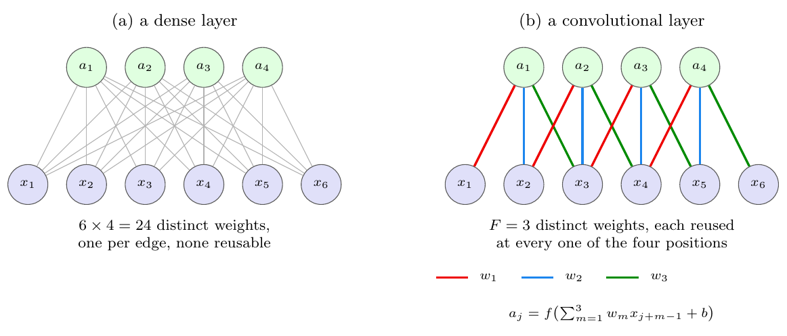
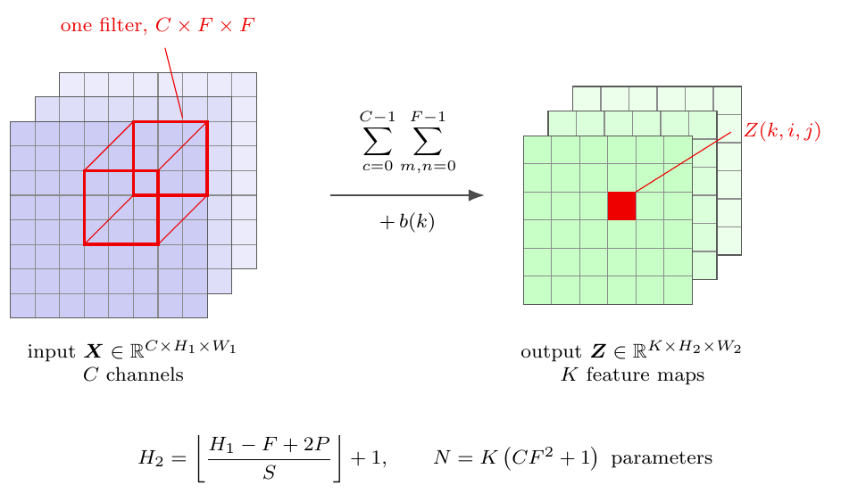
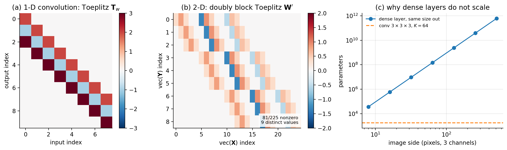
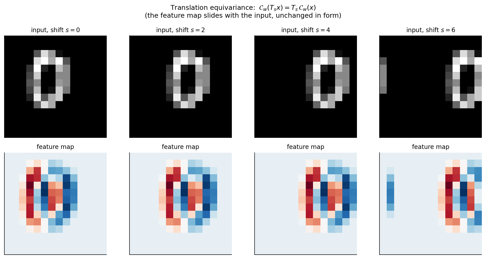
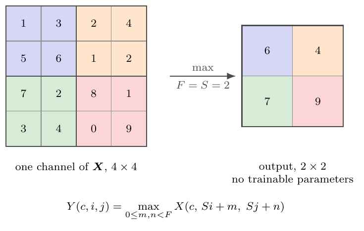
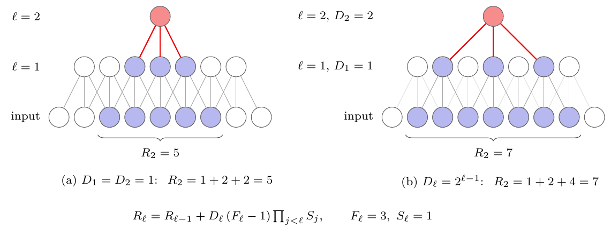
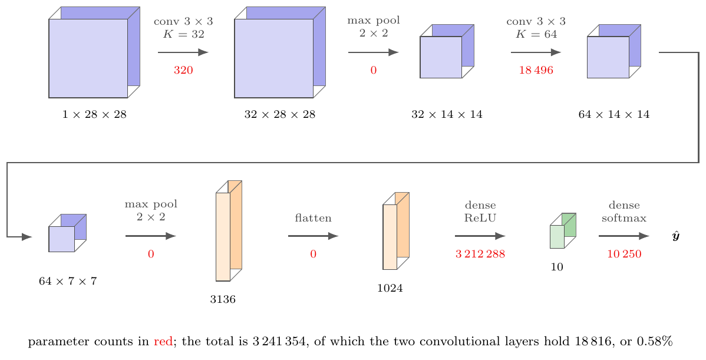
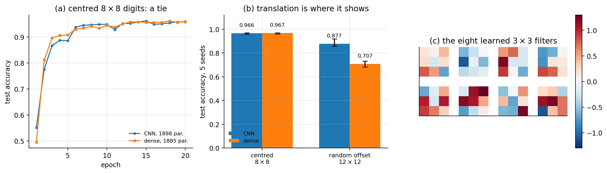
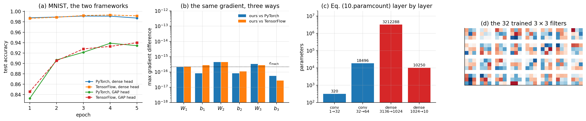

10. Chapter 10: Convolutional Neural Networks#
The network of Chapter 8 treats its input as a vector. Whatever the data were before – an image, a sound clip, a spectrum – they are flattened into \(\bm{x}\in\mathbb{R}^{d}\) and multiplied by a dense weight matrix. Every input coordinate is treated identically and interchangeably: permute the pixels of every image in the training set by one fixed permutation and the network learns exactly as well, because nothing in an affine map knows that pixel \((i,j)\) sits next to pixel \((i,j+1)\).
For data with spatial or temporal structure this is throwing away information before training begins. Images, sound and volumetric scans share three properties that a vector does not record. They are stored as multi-dimensional arrays; they have one or more axes along which ordering matters; and they have a channel axis giving different views of the same location, such as the red, green and blue values of a pixel.
The convolutional neural network is the architecture obtained by insisting that the linear map respect this structure. This chapter builds it from the definition of convolution, establishes the properties that make it the right map – sparsity, parameter sharing and above all equivariance – derives the backward pass, and implements the whole thing from scratch in NumPy. It then does something the previous chapters did not: it loads the same weights into PyTorch and into TensorFlow and checks, gradient by gradient, that the three implementations compute the same function. That check is the point of writing a convolution by hand at all. Two further sections look at filters as objects in their own right: Section Filters at work: from hand-made to learned applies hand-made filters to a digit, a drawn house and a photograph, builds a filter that detects a roof, and compares the result with what a network learns from random initial filters; Section Convolution in the frequency domain: Fourier filters describes filters in the frequency domain, where they have always been designed, and follows that description into the layers of a network and into the places – signal processing, differential equations, the architectures themselves – where Fourier filters are used. Chapter 11 will make the corresponding restriction along a time axis and obtain recurrence, so the two chapters are a pair: one symmetry each, one architecture each.
The material draws on the lecture notes for weeks forty-three and forty-four of FYS-STK3155/4155, on the survey of convolution arithmetic by Dumoulin and Visin [dumoulin2016], and on the course’s lecture on Fourier transforms and filtering.
10.1. Why not simply use a dense layer?#
The objection is one of counting. Consider a colour image of side \(L\), so the input has \(3L^{2}\) components, and a first hidden layer of the same size. A dense layer connecting them has
weights. For the \(32\times32\) images of CIFAR-10 this is already \(9.4\) million; for a modest \(200\times200\) photograph it is \(1.4\times10^{10}\), ten billion parameters in a single layer. Figure 10.3(c) plots the growth. The quartic scaling is fatal, and it is fatal twice over: such a layer cannot be stored, and even if it could, a model with more parameters than the training set has pixels will overfit catastrophically, as Section The bias-variance tradeoff would predict.
A convolutional layer with \(K\) filters of spatial extent \(F\) acting on \(C\) channels has, as we derive in Section Output size and parameter count,
weights – independent of the image size. For \(F=3\), \(C=3\) and \(K=64\) this is \(1792\) parameters whether the image is \(32\times32\) or \(4096\times4096\). That is the flat dashed line in the figure.
The counting is not confined to images. A sound clip of \(d=10^{6}\) samples and one hidden layer of \(10^{4}\) units need a weight matrix with \(10^{4}\times10^{6}=10^{10}\) entries; with the \(10^{4}\) biases and an output layer the total is \(10^{10}+10^{4}+10^{4}+1\approx10^{10}\), ten billion parameters, to decide whether the clip is a human voice. A \(200\times200\) colour photograph costs \(120\,000\) weights per neuron of the first hidden layer; a few hundred neurons are already tens of millions of parameters, wasteful and an invitation to overfit.
The saving is not free. It is bought by two structural assumptions, and the rest of this chapter is largely about what they are and when they are true:
Locality. A given output depends only on a small neighbourhood of the input. Pixels close together are far more likely to be related than pixels far apart.
Stationarity, or parameter sharing. The same weights are applied at every location. A feature worth detecting in one part of the image is worth detecting everywhere.
Both are properties of the data, not of the method. For a table of unrelated clinical measurements neither holds, and a convolutional layer would be an actively bad choice. For images, sound and time series both hold very well.
Figure 10.1 draws the two assumptions side by side on a one-dimensional input, in the layer notation of Section Notation and the feed-forward pass. The dense layer of panel (a) is one layer of Figure 8.5; the convolutional layer of panel (b) differs from it in exactly two respects, and those two respects are the whole of this chapter.

Figure 10.1: The two structural assumptions of Section Why not simply use a dense layer?, drawn on a one-dimensional input of six components. (a) A dense layer connects every input to every output and gives each edge its own weight. (b) A convolutional layer with \(F=3\) connects each output to a window of three neighbouring inputs – that is locality – and uses the same three weights \(w_1,w_2,w_3\) at every position, drawn here in the same three colours – that is parameter sharing. Twenty-four weights become three, and the three do not grow when the input is lengthened. Both pictures use the layer notation of Section Notation and the feed-forward pass: panel (a) is one layer of Figure 8.5.
10.2. What a convolutional network is: volumes and layers#
Before the mathematics, the vocabulary. Convolutional networks were developed in the 1990s for the recognition of handwritten characters [lecun1998], and they are today the central element of the success of deep learning on images. It is worth saying at the outset how little is new. A convolutional network is made of neurons with learnable weights and biases; each neuron receives some inputs, computes a dot product and applies a non-linearity; the whole network is one differentiable function from raw pixels to class scores; there is a cost on the last layer – the softmax cross-entropy of Chapter 5 for classification – and everything we know about training applies unchanged: backpropagation, gradient descent, Adam. The difference is one explicit assumption, that the inputs are images, and that assumption is built into the architecture.
Neurons arranged in three dimensions. The layers of an ordinary network are vectors. The layers of a convolutional network are volumes: arrays of neurons arranged along a width, a height and a depth, where “depth” is the third axis of one layer and not the number of layers. The input volume of a \(32\times32\) colour image is \(32\times32\times3\) – width, height and the three colour channels. A neuron of the next layer is connected only to a small region of the layer before it, not to all of it, and every layer transforms one volume into another through a differentiable function. At the end the volume is reduced to a single vector of class scores, \(1\times1\times10\) for ten classes.
The layers. A simple convolutional network is a sequence of a few kinds of layer:
INPUT, \([32\times32\times3]\): the raw pixel values.
CONV: each neuron computes a dot product between its weights and the small region of the input it is connected to. With \(12\) filters the output is \([32\times32\times12]\): the same width and height (with suitable padding), one map per filter.
RELU: the elementwise \(\max(0,x)\); the size is unchanged.
POOL: a downsampling along width and height, for example to \([16\times16\times12]\); the depth is unchanged.
FC, fully connected: the class scores, \([1\times1\times10]\); every neuron sees all the numbers of the previous volume, exactly as in the networks of Chapter 8.
CONV and FC layers have weights and biases, trained by gradient descent so that the class scores agree with the labels. RELU and POOL are fixed functions with no parameters. CONV, FC and POOL have hyperparameters – the filter size, the number of filters, the stride, the pooling window – and RELU has none. The usual arrangement is convolution and pooling alternating, the volumes shrinking in width and height and growing in depth, and one or two fully connected layers at the end: for the MNIST network of Section The same network in PyTorch and TensorFlow,
which Figure 10.11 draws with every shape and every parameter count.
Filters: hand-made in signal processing, learned in a network. In signal and image processing one designs filters. A filter is a small array of weights, “applying the filter” is a convolution of the image with it, and there are filters for smoothing, for detecting edges, for reshaping the frequency content of a signal – hand-crafted, from experience and from the mathematics of Section Convolution in the frequency domain: Fourier filters. The idea of a convolutional network is to not design the filters: to learn them from the data, to use many of them at once, and to put non-linear activations between layers of filters so that the simple patterns found by the first layer – edges – can be combined into more complex ones – corners, strokes, windows, roofs, houses – by the next. Section Filters at work: from hand-made to learned shows what hand-made filters do to a digit, a drawn house and a photograph, and then what training does to filters that start out random. First, however, the word “convolution” has to be made precise.
10.3. Convolution#
For two functions on the real line the convolution is
where \(x\) is called the input and \(w\) the kernel, filter or weight function. The discrete version, which is what we shall use throughout, replaces the integral by a sum,
In practice \(w\) has only finitely many non-zero entries, say \(w(0),\dots,w(m-1)\), and the sum is finite.
Two elementary properties will be used repeatedly. Convolution is commutative, \(x*w=w*x\), which follows from the substitution \(k\to i-k\) in Eq. (10.4); and it is linear in each argument separately. Linearity is what allows a convolution to be written as a matrix, which we do next.
10.3.1. Convolution is polynomial multiplication#
The quickest route to intuition is an example that has nothing to do with images. Take two polynomials
whose product is a polynomial of degree five, \(z(t)=\sum_{l=0}^{5}\delta_l t^{l}\). Collecting terms,
Every line has the same shape: the indices of the two factors sum to the index of the result. That is precisely Eq. (10.4),
Polynomial multiplication is discrete convolution. This is not an
analogy; the coefficient sequences convolve. With numbers:
\(\bm{\alpha}=(1,2,3)\) and \(\bm{\beta}=(4,-1,0.5,2)\) give
\(\bm{\delta}=(4,7,10.5,0,5.5,6)\) – check the third entry,
\(1\cdot0.5+2\cdot(-1)+3\cdot4=10.5\) – and np.convolve([1,2,3],[4,-1,0.5,2])
returns the same six numbers, as does np.polymul on the reversed
coefficient lists.
10.3.2. Toeplitz structure#
Since Eq. (10.7) is linear in \(\bm{\beta}\) we may write it as a matrix acting on \(\bm{\beta}\). Reading off the coefficients of Eq. (10.6),
Because convolution is commutative the same vector is obtained from \(\bm{T}_{\beta}\bm{\alpha}\) with a \(6\times3\) matrix built from \(\bm{\beta}\); which of the two sequences is called the filter is a matter of interpretation, not of mathematics.
The matrix in Eq. (10.8) has a name.
Definition 10.1 (Toeplitz matrix)
A matrix \(\bm{A}\in\mathbb{R}^{p\times q}\) is Toeplitz if its entries depend only on the difference of the indices,
equivalently if \(A_{i+1,j+1}=A_{ij}\) whenever both are defined. Each descending diagonal is constant. A Toeplitz matrix need not be square.
Theorem 10.2 (Convolution and Toeplitz matrices)
Let \(w\in\mathbb{R}^{m}\) and \(x\in\mathbb{R}^{n}\). The linear map \(x\mapsto w*x\) from \(\mathbb{R}^{n}\) to \(\mathbb{R}^{n+m-1}\) is represented by the Toeplitz matrix \(\bm{T}_w\in\mathbb{R}^{(n+m-1)\times n}\) with \((\bm{T}_w)_{ij}=w_{i-j}\), where \(w_k\equiv0\) outside \(0\le k\le m-1\). Conversely, every Toeplitz matrix arises this way. A matrix therefore represents a convolution if and only if it is Toeplitz.
Proof
The \(i\)th component of \(w*x\) is \(\sum_k w_k x_{i-k}\). Substituting \(j=i-k\) gives \(\sum_j w_{i-j}x_j\), which is the \(i\)th component of \(\bm{T}_w\bm{x}\) with \((\bm{T}_w)_{ij}=w_{i-j}\); this satisfies Definition 10.1 by construction. For the converse, given Toeplitz \(\bm{A}\) with \(A_{ij}=a_{i-j}\), set \(w_k=a_k\); then \((\bm{A}\bm{x})_i=\sum_j a_{i-j}x_j=(w*x)_i\).
Theorem 10.2 is worth pausing on, because it says the two structural assumptions of Section Why not simply use a dense layer? are not merely convenient but exhaustive. Locality makes the matrix banded; parameter sharing makes each diagonal constant; and a banded matrix with constant diagonals is a Toeplitz matrix, which is a convolution. There is no third option. Figure 10.3(a) shows such a matrix.
Do not build these matrices
The Toeplitz form is for reasoning, not for computing. Storing \(\bm{T}_w\) costs \(\bigO(n^{2})\) and multiplying by it costs \(\bigO(n^{2})\) operations, whereas evaluating Eq. (10.4) directly costs \(\bigO(nm)\) with \(m\ll n\), and \(\bigO(n\log n)\) by the fast Fourier transform, since convolution in the spatial domain is multiplication in the frequency domain. The code in Section Implementation from scratch never forms a Toeplitz matrix.
10.3.3. Diagonalisation: the convolution theorem#
The notebox above claimed that a convolution costs \(\bigO(n\log n)\) by the fast Fourier transform because convolution in one domain is multiplication in the other. That claim is a theorem about the eigenvectors of the Toeplitz structure, and it is worth proving, both because it is the reason the fast algorithms exist and because it is the cleanest illustration in this book of the principle of Chapter 1: a matrix is easy to work with in the basis of its own eigenvectors.
Take the periodic case, in which indices wrap modulo \(n\). The Toeplitz matrix of Definition 10.1 then becomes circulant: each row is the previous row shifted one place to the right, and \(C_{ij}=c_{(i-j)\bmod n}\).
Theorem 10.3 (Circular convolution is diagonalised by the DFT)
Let \(\bm{C}\) be the circulant matrix generated by \(\bm{c}\in\mathbb{C}^{n}\) and let \(\bm{F}\) be the discrete Fourier matrix, \(F_{kj}=n^{-1/2}\omega^{-kj}\) with \(\omega=e^{2\pi i/n}\). Then
so that every circulant matrix has the same eigenvectors – the Fourier modes – and eigenvalues given by the discrete Fourier transform of its generating vector. Consequently
the convolution theorem: convolution becomes elementwise multiplication.
Proof
Let \(\bm{v}_k\) have components \((\bm{v}_k)_j=\omega^{kj}\), the \(k\)th Fourier mode. Then
where the substitution \(m=(i-j)\bmod n\) is a bijection of \(\{0,\dots,n-1\}\) onto itself and the periodicity of \(\omega\) removes the modulus. So \(\bm{v}_k\) is an eigenvector with eigenvalue \(\hat{c}_k\), for every \(k\); the \(\bm{v}_k\) are orthogonal and \(n^{-1/2}\bm{v}_k\) are the columns of \(\bm{F}^{*}\), which is Eq. (10.10). Equation (10.11) follows by applying \(\bm{F}\) to \(\bm{C}\bm{x}\) and reading off the diagonal.
Three consequences follow immediately, and each is used somewhere later in this book. Computationally, Eq. (10.11) says a convolution costs two transforms and \(n\) multiplications, so \(\bigO(n\log n)\) rather than \(\bigO(n^{2})\); this is how large kernels are actually applied. Structurally, all circulant matrices commute, since they are simultaneously diagonalised – which is the algebraic content of the statement that convolutions compose into convolutions. And conceptually, Eq. (10.10) says a convolutional layer acts on each Fourier mode independently, multiplying it by a single learned number: a convolutional network is a learned filter bank, and what it learns is a frequency response.
Why the theorem does not simply end the chapter
If convolution is elementwise multiplication in Fourier space, why not build networks there and skip the spatial domain? Because the kernels used in practice are tiny. With \(F=3\) the direct cost is \(9n\) operations against \(\bigO(n\log n)\) for two transforms plus the product, and the crossover on typical image sizes is around \(F\approx11\). More fundamentally, the non-linearity between layers is elementwise in space, and an elementwise operation in one domain is a convolution in the other – so the network cannot stay in either domain. The architecture alternates between a map that is diagonal in frequency and a map that is diagonal in space, and that alternation is where its expressive power comes from.
10.3.4. Padding, and why indices go out of range#
Rename \(\bm{\alpha}\) as the filter \(\bm{w}\), of length \(m\), and \(\bm{\beta}\) as the input \(\bm{x}\), of length \(n\), with \(m\le n\). Then
For \(i=0\) this requires \(x(-1)\) and \(x(-2)\), which do not exist, and for \(i=n+m-2\) it requires indices past the end. The standard remedy is padding: extend \(\bm{x}\) with \(P\) zeros at each end, so that its length becomes \(n+2P\). With \(P=m-1\) every index in Eq. (10.12) is defined and the output has full length \(n+m-1\); this is called full padding. Two other choices are used constantly: \(P=0\), or valid padding, which evaluates the sum only where it is defined and shrinks the output to \(n-m+1\); and \(P=(m-1)/2\) for odd \(m\), or same padding, which returns an output of exactly length \(n\).
Padding with zeros is a choice, and it is visible in the result: outputs near the boundary are computed from fewer genuine inputs than outputs in the interior, so a padded convolution treats the border differently from the middle. Reflecting or wrapping the signal instead are common alternatives.
10.3.5. Cross-correlation, which is what libraries actually compute#
Equation (10.4) contains \(x(i-k)\): as \(k\) increases the input is read backwards. Implementing this means flipping the kernel before sliding it, which is a nuisance and, when the kernel is learned rather than prescribed, entirely pointless. Every deep learning library therefore computes
the cross-correlation, while calling it convolution. We follow the same convention from here on.
Why the distinction does not matter here, and when it does
Cross-correlation with \(w\) equals convolution with the reflected kernel \(\tilde{w}(k)=w(-k)\). Since \(w\) is learned, the network simply learns the reflected filter, and the set of functions the layer can represent is identical. The distinction matters only when the kernel is prescribed rather than learned – a Gaussian blur, a derivative filter, a matched filter from signal processing – or when comparing against a formula from a textbook that uses the true convolution. Note also that cross-correlation is not commutative, so the symmetry between filter and input in Eq. (10.8) is lost.
10.4. Two dimensions, channels and the convolutional layer#
For a two-dimensional input \(\bm{X}\) and kernel \(\bm{W}\) the definition extends in the obvious way,
and in the cross-correlation form actually used,
Real inputs have a channel axis, and a layer produces several outputs called feature maps. Let the input be \(\bm{X}\in\mathbb{R}^{C\times H\times W}\) with \(C\) channels, and let there be \(K\) filters, each of shape \(C\times F\times F\), collected in \(\bm{W}\in\mathbb{R}^{K\times C\times F\times F}\) with biases \(\bm{b}\in\mathbb{R}^{K}\). The layer computes, for \(k=0,\dots,K-1\),
followed by an elementwise activation, \(A=f(Z)\). Here \(S\) is the stride, the step by which the filter is moved, and \(P\) the padding.
Three points about Eq. (10.16) deserve emphasis. The sum over \(c\) runs over all input channels: a filter is not applied channel by channel but sees the full depth at each spatial location, which is why its shape is \(C\times F\times F\) and not \(F\times F\). The indices \(i,j\) range over output positions while \(m,n\) range over the filter, so the filter is small and the output is large. And \(W\) does not depend on \(i\) or \(j\) – that is parameter sharing, written out. Figure 10.2 shows the three statements as one picture: a filter drawn as a block spanning the full depth, one output value produced from it, and the \(K\) maps that \(K\) such filters make.

Figure 10.2: Equation (10.16) drawn. A filter is a \(C\times F\times F\) block, not an \(F\times F\) patch: it spans the whole depth of the input at each spatial location, which is why the sum over \(c\) in Eq. (10.16) has no counterpart among the output indices. The block shown produces the single value \(Z(k,i,j)\) marked in the output; sliding it over all positions \((i,j)\) with step \(S\) fills one feature map, and using \(K\) different filters produces the \(K\) maps stacked behind it. The spatial sizes follow Proposition 10.4 and the parameter count is independent of \(H_1\) and \(W_1\).
10.4.1. Output size and parameter count#
Proposition 10.4 (Convolution arithmetic)
Let the input have height \(H_1\), width \(W_1\) and depth \(C\), and apply \(K\) filters of spatial extent \(F\) with stride \(S\) and padding \(P\). Then the output volume has depth \(D_2=K\) and spatial dimensions
and the layer has
trainable parameters.
Proof
Along the height, the padded input has \(H_1+2P\) entries. The filter occupies positions \(0,S,2S,\dots\) and its last element must not run past the end, so the largest admissible starting index \(t\) satisfies \(t+F-1\le H_1+2P-1\), that is \(t\le H_1+2P-F\). The number of admissible multiples of \(S\) in \([0,H_1+2P-F]\) is \(\lfloor(H_1+2P-F)/S\rfloor+1\), which is Eq. (10.17); the width is identical. Each output channel is produced by one filter of \(CF^{2}\) weights plus one bias, and there are \(K\) of them, giving Eq. (10.18).
The floor in Eq. (10.17) is not decoration. When \(S\) does not divide \(H_1+2P-F\) the filter cannot reach the last few rows, and they are silently discarded. Choosing \(F\), \(S\) and \(P\) so that the division is exact is the reason for the familiar combinations \(F=3,S=1,P=1\) and \(F=5,S=1,P=2\), both of which give \(H_2=H_1\).
Example 10.5 (A concrete count)
An input volume of \(32\times32\times3\) with \(K=10\) filters of extent \(F=5\), stride \(S=1\) and padding \(P=0\) gives \(H_2=W_2=(32-5)/1+1=28\), so the output is \(28\times28\times10\). Each filter has \(5\times5\times3=75\) weights and one bias, so the layer has \(10\times76=760\) parameters. A dense layer with the same number of outputs would have \(3072\times7840\approx2.4\times10^{7}\).
10.4.2. The unrolled matrix#
Equation (10.16) is linear in \(\bm{X}\), so it must be a matrix. Take the small example of a \(3\times3\) input and a \(2\times2\) filter with \(S=1\), \(P=0\). Flattening the input row by row into \(\bm{X}'\in\mathbb{R}^{9}\) and the output into \(\bm{Y}'\in\mathbb{R}^{4}\), the convolution is \(\bm{Y}'=\bm{W}'\bm{X}'\) with
With numbers: for \(\bm{X}\) the matrix with entries \(1,\dots,9\) row by row and \(\bm{W}=\bigl(\begin{smallmatrix}1&2\\3&4\end{smallmatrix}\bigr)\), the top-left output is \(1\cdot1+2\cdot2+4\cdot3+5\cdot4=37\), and
the same four numbers from the matrix–vector product. This matrix is doubly block Toeplitz: it is a Toeplitz matrix whose entries are themselves Toeplitz blocks, the outer structure coming from the row index and the inner from the column index. Four numbers appear in thirty-six positions. We verify this claim numerically in Section Implementation from scratch by reconstructing \(\bm{W}'\) column by column from the implementation and checking that it has exactly sixteen non-zero entries taking exactly four distinct values; Figure 10.3(b) shows the same pattern for a \(5\times5\) input and a \(3\times3\) kernel.

Figure 10.3: Convolution as a structured sparse matrix. (a) A one-dimensional convolution with a kernel of length three acting on an input of length eight, Eq. (10.8); each descending diagonal is constant, which is Definition 10.1. (b) The doubly block Toeplitz matrix \(\bm{W}'\) of Eq. (10.19) for a \(5\times5\) input and a \(3\times3\) kernel, reconstructed column by column from the code of Section Implementation from scratch: nine distinct numbers fill eighty-one of two hundred and twenty-five positions. (c) Parameters in a single layer as a function of image side, Eqs. (10.1) and (10.2); the dense layer grows as \(L^{4}\) while the convolutional layer does not grow at all.
10.5. Equivariance, and what it does and does not give#
Sparsity and parameter sharing explain the parameter count. The property that explains why convolution is the right restriction, rather than merely a cheap one, is equivariance.
Definition 10.6 (Equivariance and invariance)
Let \(T_s\) denote translation by \(s\), \((T_s x)(i)=x(i-s)\). A map \(\Phi\) is equivariant to translation if
and invariant if \(\Phi(T_s x)=\Phi(x)\) for all \(x,s\).
Equivariance says that translating the input translates the output by the same amount without otherwise changing it: if a filter responds to an edge, it responds to that edge wherever the edge moves. Invariance says the output does not move at all. Both are wanted, but at different places in the network: equivariance in the convolutional layers, where we want to know where features are, and invariance at the end, where we want to know only what the image contains.
Theorem 10.7 (Convolution is exactly the equivariant linear map)
Let \(\Phi:\mathbb{R}^{\mathbb{Z}}\to\mathbb{R}^{\mathbb{Z}}\) be linear. Then \(\Phi\) is equivariant to all translations if and only if \(\Phi\) is a convolution, that is, there is a \(w\) with \(\Phi(x)=w*x\).
Proof
(\(\Leftarrow\)) With \(\Phi(x)=w*x\),
(\(\Rightarrow\)) Let \(\delta\) be the sequence with \(\delta(0)=1\) and \(\delta(i)=0\) otherwise, and put \(w=\Phi(\delta)\), the impulse response. Any \(x\) may be written \(x=\sum_s x(s)\,T_s\delta\). By linearity and then equivariance,
whose \(i\)th component is \(\sum_s x(s)w(i-s)=(w*x)(i)\).
This is the theorem that justifies the architecture. We did not choose convolution from a menu of plausible local operations; once we demand a linear map that commutes with translation, convolution is the only thing left. The restriction from \(\bigO(L^{4})\) parameters to \(\bigO(F^{2})\) is the exact price of that symmetry.
Two qualifications matter in practice, and both are easy to state and easy to forget.
Proposition 10.8 (Stride breaks equivariance)
A convolution with stride \(S\) is equivariant to translations by multiples of \(S\) only. For \(s\) not divisible by \(S\), in general \(\Phi(T_sx)\neq T_{\lfloor s/S\rfloor}\Phi(x)\).
Proof
Striding retains outputs at positions \(Si\). Shifting the input by \(s\) shifts the underlying full-stride output by \(s\), and the retained subset \(\{Si\}\) maps to \(\{Si+s\}\), which coincides with \(\{Si\}\) as a set if and only if \(S\mid s\). Otherwise a different subsample of the same signal is retained and no translation of the output reproduces it.
We confirm this numerically in Section Implementation from scratch: for \(S=1\) the equivariance error is exactly zero, for \(S=2\) it is exactly zero for even shifts and \(\bigO(1)\) for odd ones. Padding is the second qualification. With zero padding the boundary rows are computed from invented zeros, so equivariance holds in the interior but fails within \(F/2\) of the edge – which is why the numerical check in Section Implementation from scratch is stated on the interior.
Figure 10.4 shows the property directly.

Figure 10.4: Translation equivariance, Eq. (10.20), for a fixed \(3\times3\) derivative filter applied to a digit placed at four positions on a \(14\times14\) canvas. The feature map in the lower row slides with the input in the upper row and is otherwise unchanged: measured on the interior, the discrepancy \(\max|\mathcal{C}_w(T_sx)-T_s\mathcal{C}_w(x)|\) is exactly zero. A dense layer has no such property, and must learn each position separately.
10.6. Pooling#
Equivariance propagates information about position through the network. At some point we want to discard it: a classifier should report “digit three” regardless of where the three sat. Pooling is the operation that trades position for robustness.
A pooling layer slides a window of size \(F\) with stride \(S\) over each channel independently and applies a fixed function to the contents. Max pooling,
is by far the most common; average pooling replaces the maximum by the mean. Pooling has no trainable parameters, and it does not mix channels, so the depth is unchanged and Eq. (10.17) governs the spatial sizes with \(P=0\).
The usual choice \(F=S=2\) discards three quarters of the activations in one step, as in Figure 10.5. The gain is a limited invariance: if the largest value in a window moves within that window, the output does not change at all. Pooling therefore converts equivariance at fine scale into invariance at fine scale, and stacking convolution and pooling alternately builds up invariance to progressively larger displacements while the receptive field grows.
Proposition 10.9 (Local invariance of max pooling)
Let \(\Pi\) be max pooling with window \(F\) and stride \(S=F\), so that the windows tile the input without overlap, and let \(x\) be supported in one window \(\mathcal{W}\). If \(T_s x\) is still supported in \(\mathcal{W}\), then \(\Pi(T_sx)=\Pi(x)\). If instead \(s\) moves the support into the neighbouring window, the output is unchanged in value but appears one position later.
Proof
The pooling output at window \(\mathcal{W}\) is \(\max_{p\in\mathcal{W}}x(p)\), which depends on the multiset of values in \(\mathcal{W}\) and not on their arrangement; a translation that permutes positions within \(\mathcal{W}\) therefore leaves it fixed. A translation carrying the support into the next window leaves the multiset intact but attaches it to the next output index.

Figure 10.5: Max pooling with \(F=S=2\), Eq. (10.21). The four non-overlapping windows are shaded in four colours and each contributes one value, its maximum, to the correspondingly shaded output cell. Three quarters of the activations are discarded and nothing is learned: the operation has no parameters at all. Proposition 10.9 is visible here – move the \(9\) anywhere within its own window and the output is unchanged, move it into a neighbouring window and the output merely shifts.
Figure 10.6 shows pooling at work on a real feature map, the vertical-edge map of the five of Figure 10.8 after a ReLU. Max pooling with \(F=S=2\) keeps the strongest response in each \(2\times2\) window and halves the side, \(26\to13\); average pooling blurs instead. The last panel is Proposition 10.9 measured: moving the digit one pixel to the right changes the full-resolution map everywhere, but \(73\%\) of the max-pooled values are unchanged, because in most windows the largest value simply moved within its window. After two convolution–pooling blocks a \(28\times28\) digit has become a stack of \(7\times7\) maps, which is flattened and handed to the dense layers.

Figure 10.6: Pooling on a feature map. The vertical-edge map of the five after a ReLU (\(26\times26\)), max-pooled and average-pooled with \(2\times2\) windows and stride \(2\) (\(13\times13\)), and the max-pooled map when the digit is first moved one pixel to the right: \(73\%\) of the pooled values are unchanged, which is Proposition 10.9 on real data. Max pooling keeps the strongest response in each window; average pooling blurs.
Proposition 10.9 is the precise version of “a limited invariance”. Pooling is exactly invariant to displacements that stay inside a window and merely equivariant to larger ones – so a stack of pooling layers buys invariance to displacements up to the size of the last window measured in input pixels, and no more. That quantity is the receptive field, which we now compute.
Proposition 10.10 (Receptive field)
Consider \(L\) layers, layer \(\ell\) having filter size \(F_\ell\) and stride \(S_\ell\). The receptive field \(R_L\) of one output unit – the number of input pixels along one axis that can influence it – satisfies \(R_0=1\) and
Proof
A unit at layer \(\ell\) draws on \(F_\ell\) consecutive units of layer \(\ell-1\), whose receptive fields are each of size \(R_{\ell-1}\) and are offset from one another by the cumulative stride \(\prod_{j<\ell}S_j\) measured in input pixels. The union of \(F_\ell\) intervals of length \(R_{\ell-1}\) spaced by that offset has length \(R_{\ell-1}+(F_\ell-1)\prod_{j<\ell}S_j\).
Equation (10.22) explains a design rule. With \(3\times3\) filters and unit stride the receptive field grows only as \(2\ell+1\), painfully slowly; every pooling layer of stride two doubles the multiplier and the growth becomes geometric. Three blocks of two \(3\times3\) convolutions followed by a \(2\times2\) pool reach a receptive field of \(R=44\), enough to see most of a \(32\times32\) image. Stacking small filters rather than using one large one is also cheaper: two \(3\times3\) layers have receptive field \(5\) and \(2\times9C^2\) weights, against \(25C^2\) for a single \(5\times5\) layer, and they include an extra non-linearity.
10.6.1. Dilation: receptive field without cost#
Equation (10.22) shows two ways to enlarge the receptive field, and both are expensive: larger filters cost \(\bigO(F^{2})\) parameters, and stride or pooling costs resolution. A third way costs neither. A dilated or atrous convolution with rate \(D\) spreads the filter taps apart,
which for \(D=1\) is Eq. (10.15) and for \(D>1\) reads from a grid of the same \(F^{2}\) positions spaced \(D\) apart.
Proposition 10.11 (Effective filter size and dilated receptive field)
A dilated convolution with filter size \(F\) and rate \(D\) has the same \(K(CF^{2}+1)\) parameters as an undilated one and an effective filter size
Stacking \(L\) such layers with unit stride and rates \(D_\ell\) gives a receptive field
In particular, \(F=3\) with \(D_\ell=2^{\ell-1}\) gives \(R_L=2^{L+1}-1\): the receptive field grows exponentially in depth while the parameter count grows linearly and the resolution is never reduced.
Proof
The taps occupy positions \(0,D,2D,\dots,D(F-1)\), spanning \(D(F-1)+1\) pixels, which is Eq. (10.24); the number of taps, and hence of weights, is unchanged. Substituting \(F_\ell\to D_\ell(F_\ell-1)+1\) into Eq. (10.22) with all \(S_j=1\) gives \(R_\ell = R_{\ell-1}+D_\ell(F_\ell-1)\), and summing from \(R_0=1\) gives Eq. (10.25). With \(F_\ell=3\) and \(D_\ell=2^{\ell-1}\) the sum is \(1+2\sum_{\ell=1}^{L}2^{\ell-1}=2^{L+1}-1\).
Compare the three routes to a receptive field of \(R=63\) with \(3\times3\) filters. Unit stride and no dilation needs \(31\) layers, by \(R=2L+1\). Pooling of stride two every second layer needs about \(10\) and throws away a factor of \(32\) in resolution. Exponential dilation needs \(5\), by Proposition 10.11, at full resolution throughout. This is why dilation is standard in segmentation, where the output must have the same size as the input, and in the audio models where the receptive field must span thousands of samples. Figure 10.7 shows both cases for two layers, with the reach of a single output unit shaded on the input row.

Figure 10.7: The receptive field of Proposition 10.10 and what dilation does to it, for two layers of \(F=3\) with unit stride. The shaded input units are those the single top unit can see. (a) Without dilation the two layers reach five inputs, and Eq. (10.22) gives the familiar \(R_\ell=2\ell+1\). (b) With \(D_2=2\) the second layer reads every other unit of the first – the pale edges are first-layer units that are computed but not read by this particular output – and the reach becomes seven. The filter has the same three taps in both panels and the resolution is reduced in neither; Proposition 10.11 continues the pattern to \(R_L=2^{L+1}-1\).
10.7. Filters at work: from hand-made to learned#
Everything so far has been about the form of a convolutional layer. This section is about what a filter does, on pictures, and it is worth reading with Figures 10.8–10.10 in front of you. We apply filters designed by hand – the kind signal processing has used for decades – to a digit, to a drawn house and to a photograph of houses, we build a filter that detects a roof, and we then look at what a network does to filters that start out random. The point of the section is the last step: the learned filters of Figure 10.12(c) are not mysterious objects but members of the family we are about to meet.
10.7.1. Four edge filters and a blur#
Every feature map below is the cross-correlation of Eq. (10.15), \(Y(i,j)=\sum_{m,n}X(i+m,j+n)W(m,n)\), of one image with one \(3\times3\) filter. The filters are
\(W_{\mathrm{vert}}\) is the Sobel operator. Read row by row it is the central difference along a row, \(X(i,j+1)-X(i,j-1)\), taken in three neighbouring rows and averaged with weights \((1,2,1)\): a smoothed estimate of \(\partial X/\partial x\). It is large where the intensity changes as we move sideways, which is at a vertical stroke or edge, positive where the ink begins and negative where it ends, and zero inside a stroke and along a horizontal stroke, where every row is constant. \(W_{\mathrm{hor}}= W_{\mathrm{vert}}^{T}\) is the same construction down a column, \(\partial X/\partial y\), and responds to horizontal edges. The diagonal pair are the same differences along the two diagonals – the Sobel operator rotated by \(45^{\circ}\). All four have weights that sum to zero, so a region of constant intensity gives exactly \(0\) whatever its brightness: they respond to changes only. The blur is the opposite kind of object. Its weights are positive and sum to one, so it replaces every pixel by the mean of its \(3\times3\) neighbourhood, preserves constants, and removes fine detail – it is a low-pass filter, in the language of Section Convolution in the frequency domain: Fourier filters, where the edge filters are high-pass.

Figure 10.8: Three hand-made filters on an MNIST test image, a five. The vertical-edge filter \(W_{\mathrm{vert}}\) of Eq. (10.26) is a derivative along a row: positive (red) where the ink starts, negative (blue) where it ends, zero inside a stroke and on the horizontal strokes. Its transpose finds the horizontal strokes. The blur of Eq. (10.27) is a \(3\times3\) mean. No padding, so the maps are \(26\times26\); each is one feature map, and a layer with \(K=3\) filters computes all three at once with \(3\times(9+1)=30\) parameters.
Figure 10.8 applies three of them to a digit. The vertical strokes of the five light up in the first map and vanish in the second; the horizontal strokes do the reverse; the blur keeps the digit and softens its boundary. Each output is one feature map, and a convolutional layer with \(K=3\) filters produces all three at once, by Proposition 10.4 with \(3\times(1\cdot9+1)=30\) parameters.

Figure 10.9: A \(24\times24\) drawing of a house – walls, a gabled roof, a door, a window – and four feature maps, each the cross-correlation with one of the \(3\times3\) filters of Eqs. (10.26)–(10.27) with \(P=1\), so the maps keep the size of the picture. The vertical-edge filter finds the walls and the sides of door and window, the horizontal one the floor, the lintels and the roof as a whole, and each diagonal filter picks out one slope of the roof. The last panel uses the roof itself, cut out of the picture, as a \(10\times16\) template: the normalised cross-correlation of Eq. (10.28) equals \(1.00\) exactly where the roof is (circled) and is smaller everywhere else – a filter that detects a roof.
Figure 10.9 does the same to a drawn house, with \(P=1\) so that the maps keep the size of the picture. The vertical-edge filter finds the walls and the sides of the door and the window, the horizontal one the floor, the lintels and the roof as a whole, and the two diagonal filters each pick out exactly one slope of the roof. Four filters, each a few integers, already decompose the drawing into the oriented edges it is made of. That is the first layer of a convolutional network, written by hand.
10.7.2. A filter that detects a roof: template matching#
Edge filters are small. Nothing in Eq. (10.15) says a filter has to be, and the last panel of Figure 10.9 uses a large one: the roof itself, cut out of the picture. Take the \(10\times16\) patch \(T\) containing the roof, subtract its mean and divide by its norm, so that \(\sum_{m,n}T(m,n)=0\) and \(\sum_{m,n}T(m,n)^{2}=1\). For every patch \(X_{ij}\) of the same size in the image, with mean \(\bar X_{ij}\), define
the normalised cross-correlation. The numerator is the cross-correlation of the image with \(T\), Eq. (10.15); the denominator is the norm of the centred patch. The quotient is the cosine of the angle between the centred patch and the template, and that geometry is what makes it a detector.
Proposition 10.12 (Normalised cross-correlation is a detector)
For a zero-mean, unit-norm template \(T\) and any patch \(X_{ij}\) that is not constant, \(-1\le\mathrm{NCC}(i,j)\le1\), with \(\mathrm{NCC}(i,j)=1\) if and only if \(X_{ij}=aT+b\) for some \(a>0\) and \(b\): the patch is the template, up to brightness \(b\) and contrast \(a\). The value does not change if the image is rescaled or shifted in intensity.
Proof
Since \(\sum T=0\), the numerator of Eq. (10.28) equals \(\langle X_{ij}-\bar X_{ij},T\rangle\) and the denominator equals \(\|X_{ij}-\bar X_{ij}\|\,\|T\|\) with \(\|T\|=1\), so the quotient is the cosine of the angle between two vectors, which lies in \([-1,1]\) by the Cauchy–Schwarz inequality, with equality \(+1\) exactly when the centred patch is a positive multiple of \(T\), that is \(X_{ij}-\bar X_{ij}=aT\) with \(a>0\). Replacing \(X\) by \(\alpha X+\beta\) with \(\alpha>0\) multiplies numerator and denominator by \(\alpha\) and leaves \(\bar X_{ij}\) to absorb \(\beta\).
In code the whole map costs three cross-correlations: of \(X\) with \(T\), of \(X\)
with a matrix of ones (the patch sums, hence the means) and of \(X^{2}\) with a
matrix of ones (the patch norms), each a single call to
correlate2d from scipy.signal with mode="valid".
On the house the map
peaks at exactly \(1.00\) at the position of the roof and nowhere else above
\(0.82\).

Figure 10.10: The same filters on a photograph of houses, in grey, \(211\times360\) pixels. The Sobel filters draw the vertical lines (walls, window edges, people) and the horizontal ones (roof lines, floors, arches); a \(5\times5\) blur removes the texture of the stone. Right: one double-arched window, \(22\times18\) pixels, cut from the photograph and used as the template in Eq. (10.28). The normalised cross-correlation lights up at every window of that type – six on the middle building and one on the left – and nowhere else above \(0.7\). A filter that finds windows is the beginning of a filter that finds houses.
Figure 10.10 moves from the drawing to a photograph. The Sobel filters again separate the vertical from the horizontal structure, and the blur removes the texture of the stone while keeping the buildings. For the template we cut out one double-arched window, \(22\times18\) pixels. The normalised cross-correlation with it reaches \(1.00\) at the window we cut and exceeds \(0.7\) at six more windows of the same building and one on the next – and nowhere else. A filter that finds windows is the beginning of a filter that finds houses, and the pattern is general: a template is a filter for one specific thing, and a bank of templates for edges, corners, windows and roofs is a crude object detector.
What the template cannot do is also visible. It matches a window of that size and orientation; a window twice as large, or seen at an angle, gives a much weaker response. Convolution handles position for free, by the equivariance of Theorem 10.7; size and rotation it does not handle at all. A network learns those from examples at several scales and orientations, or the data are augmented with rescaled and rotated copies to supply them.
10.7.3. From hand-made filters to learned ones#
Everything above was chosen by hand, and choosing it took knowledge of what a house looks like. A convolutional network starts instead from random filters and adjusts them by gradient descent on the classification cost, through the gradients derived in Section Backpropagation through a convolutional layer. Nothing in the cost mentions edges. Yet the first-layer filters of the network trained in Section Does it actually help? An experiment – Figure 10.12(c), eight \(3\times3\) filters on \(8\times8\) digits – and of the network trained on MNIST in Section Training on MNIST, and what the dense layer is worth – Figure 10.13(d), thirty-two of them – are oriented patterns with a positive lobe beside a negative one: edge detectors of the family of Eq. (10.26), at various orientations, with various widths, learned because edges are what separate the digits. Nobody asked for them. They are what minimising a cross-entropy on images produces.
Three remarks connect the hand-made filters to the learned ones.
First, the ReLU. The Sobel map in Figure 10.8 is signed: red where the ink begins, blue where it ends. A ReLU after the layer keeps only the positive half. A trained network therefore typically learns a filter and its negative, so that both polarities of an edge survive the activation; the paired filters in Figure 10.13(d) are an instance.
Second, depth. The second layer sees feature maps, not pixels, and its filters span the full depth of the first layer’s output by Eq. (10.16). A second-layer filter can therefore respond to “a vertical edge next to a horizontal one” – a corner – or to “two diagonal edges meeting at the top” – a gable – and a third layer to arrangements of those. The template of Figure 10.9 was a single large filter for a roof; a deep network builds the same detector out of small filters composed through non-linearities, which is cheaper in parameters (Proposition 10.10: two \(3\times3\) layers see as far as one \(5\times5\) with fewer weights) and, unlike the template, shared between every object that contains a corner. A network trained on houses would learn the window and the roof of Figure 10.10 without being shown them.
Third, reading a feature map. Why does the vertical-edge filter, whose rows read \((-1,0,1)\), light up on the vertical strokes? Because it is a difference between the pixel to the right and the pixel to the left – a derivative along a row – and that derivative is large where the intensity changes as we move sideways, which is where a vertical stroke begins or ends, and zero on a horizontal stroke, where every row is constant. The same reading applies to a learned filter: display it as a small image, look for the opposed lobes, and the orientation of the edge it detects is perpendicular to the line joining them. Section Convolution in the frequency domain: Fourier filters gives the same reading in the language of frequencies, where \(W_{\mathrm{vert}}\) has the response \(4|\sin\Omega_x|(1+\cos\Omega_y)\): zero on the axis \(\Omega_x=0\) – every pattern that does not change along a row is invisible to it – and largest for oscillations across the row.
10.8. Backpropagation through a convolutional layer#
Chapter 8 derived the four equations of backpropagation for dense layers. Nothing about them changes here – the network is still a composition of differentiable maps and the chain rule is still the chain rule – but the gradients of Eq. (10.16) are worth deriving explicitly, because the result is elegant and because the derivation is where errors hide.
Write \(\delta(k,i,j)=\partial\mathcal{C}/\partial Z(k,i,j)\) for the error propagated back to the output of the convolution, as in Chapter 8. We want \(\partial\mathcal{C}/\partial W\), \(\partial\mathcal{C}/\partial b\) and \(\partial\mathcal{C}/\partial X\).
The filter gradient. By the chain rule, summing over every output position that \(W(k,c,m,n)\) touched,
using Eq. (10.16) for the inner derivative. The right-hand side is itself a cross-correlation, of the input with the error. Every output position contributes to every filter weight: this is the price and the point of parameter sharing, and it is why a convolutional layer with few parameters can still receive a large, well-averaged gradient.
The bias gradient. Since \(b(k)\) is added at every spatial position of feature map \(k\),
The input gradient. Here we must collect every output that a given input pixel influenced,
where terms with filter indices outside \([0,F-1]\) are omitted. For \(S=1\) this is a convolution of \(\delta\) with the spatially flipped kernel – the transposed convolution – which is the cleanest way to remember it: the forward pass correlates, the backward pass convolves.
The backward pass is the adjoint
All three results are instances of one fact. The forward map \(\bm{X}\mapsto\bm{Z}\) is linear, represented by the matrix \(\bm{W}'\) of Eq. (10.19), so the gradient with respect to the input is \(\bm{W}'^{\top}\bm{\delta}\). Backpropagation through any linear layer is multiplication by its adjoint, and Eq. (10.31) is simply \(\bm{W}'^{\top}\) written out in index form. The code of Section Implementation from scratch exploits this directly, and we test it by checking the adjoint identity \(\langle\mathcal{A}\bm{x},\bm{y}\rangle =\langle\bm{x},\mathcal{A}^{*}\bm{y}\rangle\) numerically.
The transposed convolution. The remark that the backward pass is a convolution with the flipped kernel is worth promoting to a definition, because the same operation appears in the forward direction in every generative architecture of Part IV: the decoder of Chapter 15, the denoiser of Chapter 16 and the generator of Chapter 17 all have to enlarge a small array into a large one.
Proposition 10.13 (Transposed convolution)
Let \(\mathcal{A}\) be the convolution of Eq. (10.16) with filter
size \(F\), stride \(S\) and padding \(P\), mapping an input of side \(H_1\) to an
output of side \(H_2\) given by Eq. (10.17). Its adjoint
\(\mathcal{A}^{*}\) – the map applied in the backward pass, and the layer called
ConvTranspose2d or Conv2DTranspose – maps an array of side \(H_2\)
to one of side
and is itself a convolution: for \(S=1\) it is the correlation with the spatially flipped kernel and padding \(F-1-P\), and for \(S>1\) it is the same after inserting \(S-1\) zeros between adjacent input elements.
Proof
Since \(\mathcal{A}\) is linear with matrix \(\bm{W}'\) as in Eq. (10.19), its adjoint has matrix \(\bm{W}'^{\top}\) and therefore maps \(\mathbb{R}^{H_2\times H_2}\to\mathbb{R}^{H_1\times H_1}\); solving Eq. (10.17) for \(H_1\) in the case where \(S\) divides \(H_1+2P-F\) gives Eq. (10.32). For the second statement, Eq. (10.31) with \(S=1\) reads \(\partial\mathcal{C}/\partial X(c,p,q)=\sum_k\sum_{i,j}\delta(k,i,j) W(k,c,p-i+P,q-j+P)\), which is the correlation of \(\delta\) with \(W\) read in reverse index order, that is with the flipped kernel, and the index range requires \(F-1-P\) zeros of padding on \(\delta\). For \(S>1\), Eq. (10.31) has \(\delta\) evaluated only at positions \(Si\), which is \(\delta\) upsampled by inserting \(S-1\) zeros.
Equation (10.32) is the formula to reach for when a generator has to be designed backwards from its output size, and the zero insertion is the reason transposed convolutions produce the checkerboard artefacts that are visible in early GAN samples: neighbouring output pixels are computed from different numbers of genuine inputs when \(S\) does not divide \(F\). Choosing \(F\) a multiple of \(S\) – \(F=4\), \(S=2\) is the usual pair, and is what Chapter 17 uses – removes them.
Through a pooling layer. Max pooling is not differentiable everywhere, but it is differentiable almost everywhere, and where it is the derivative is a routing:
The gradient flows only to the element that won the maximum, and the argmax must be recorded during the forward pass. Ties have measure zero and are broken arbitrarily. For average pooling the gradient is instead spread equally, each of the \(F^{2}\) inputs receiving \(\delta/F^{2}\).
10.9. Implementation from scratch#
We now write the whole thing in NumPy, in the same style as Chapter 8: parameters are plain arrays, the forward pass is a function, and every gradient is checked against finite differences before anything is trained.
10.9.1. The im2col transformation#
The six nested loops implied by Eq. (10.16) are correct and unusably slow in Python. The standard remedy is im2col: rearrange every \(F\times F\) patch of the input into a column, so that the convolution becomes a single matrix product. If \(\bm{X}\) has shape \((N,C,H,W)\), the result has shape \((N,\,CF^{2},\,H_2W_2)\) and
which BLAS executes at full speed. The cost is memory: each input element is replicated up to \(F^{2}\) times.
def im2col(X, F, S, P):
"""Rearrange every F x F patch of X into a column, Eq. (10.im2col).
X has shape (N, C, H, W); the result has shape (N, C*F*F, H2*W2) with
H2 = (H - F + 2P)/S + 1, so that a convolution becomes one matrix product.
"""
N, C, H, W = X.shape
H2 = (H - F + 2 * P) // S + 1
W2 = (W - F + 2 * P) // S + 1
Xp = pad2d(X, P)
cols = np.empty((N, C * F * F, H2 * W2))
for i in range(F):
for j in range(F):
patch = Xp[:, :, i:i + S * H2:S, j:j + S * W2:S] # (N,C,H2,W2)
cols[:, (i * F + j)::F * F, :] = patch.reshape(N, C, -1)
return cols
def col2im(cols, X_shape, F, S, P):
"""Adjoint of im2col: scatter columns back, accumulating overlaps."""
N, C, H, W = X_shape
H2 = (H - F + 2 * P) // S + 1
W2 = (W - F + 2 * P) // S + 1
Xp = np.zeros((N, C, H + 2 * P, W + 2 * P))
for i in range(F):
for j in range(F):
patch = cols[:, (i * F + j)::F * F, :].reshape(N, C, H2, W2)
np.add.at(Xp, (slice(None), slice(None),
slice(i, i + S * H2, S), slice(j, j + S * W2, S)), patch)
return Xp if P == 0 else Xp[:, :, P:-P, P:-P]
The loops run over the filter, which is small, not over the image. The forward and backward passes follow directly from Eqs. (10.29)–(10.31).
def conv_forward(X, W, b, S=1, P=0):
"""Cross-correlation, Eq. (10.crosscorr2d). W has shape (K, C, F, F)."""
N, C, H, Wd = X.shape
K, _, F, _ = W.shape
H2 = (H - F + 2 * P) // S + 1
W2 = (Wd - F + 2 * P) // S + 1
cols = im2col(X, F, S, P) # (N, C*F*F, H2*W2)
out = np.einsum("kd,ndp->nkp", W.reshape(K, -1), cols) + b[None, :, None]
return out.reshape(N, K, H2, W2), cols
def conv_backward(dY, X, W, cols, S=1, P=0):
"""Gradients of the convolution, Eqs. (10.dconvW), (10.dconvb), (10.dconvX)."""
N, K, H2, W2 = dY.shape
_, C, F, _ = W.shape
dYf = dY.reshape(N, K, -1) # (N,K,H2W2)
dW = np.einsum("nkp,ndp->kd", dYf, cols).reshape(W.shape)
db = dYf.sum(axis=(0, 2))
dcols = np.einsum("kd,nkp->ndp", W.reshape(K, -1), dYf)
dX = col2im(dcols, X.shape, F, S, P)
return dX, dW, db
Max pooling stores the argmax so that Eq. (10.33) can route the gradient:
def maxpool_forward(X, F=2, S=2):
"""Max pooling, Eq. (10.maxpool). Returns the output and an argmax mask."""
N, C, H, W = X.shape
H2, W2 = (H - F) // S + 1, (W - F) // S + 1
patches = np.empty((N, C, H2, W2, F * F))
for i in range(F):
for j in range(F):
patches[..., i * F + j] = X[:, :, i:i + S * H2:S, j:j + S * W2:S]
idx = patches.argmax(axis=-1)
out = np.take_along_axis(patches, idx[..., None], axis=-1)[..., 0]
return out, idx
def maxpool_backward(dY, X, idx, F=2, S=2):
"""Route each gradient to the argmax that produced it, Eq. (10.dmaxpool)."""
N, C, H, W = X.shape
H2, W2 = dY.shape[2], dY.shape[3]
dX = np.zeros_like(X)
for i in range(F):
for j in range(F):
mask = (idx == i * F + j)
np.add.at(dX, (slice(None), slice(None),
slice(i, i + S * H2, S), slice(j, j + S * W2, S)),
dY * mask)
return dX
10.9.2. Verifying the implementation#
Four checks, in increasing order of strength. First, that conv_forward
agrees with the definition (10.16) coded as an explicit
quadruple loop, for several strides and paddings:
S=1 P=0 shape (2, 4, 5, 5) max|conv-naive| = 3.553e-15
S=1 P=1 shape (2, 4, 7, 7) max|conv-naive| = 3.553e-15
S=2 P=1 shape (2, 4, 4, 4) max|conv-naive| = 3.553e-15
S=2 P=0 shape (2, 4, 3, 3) max|conv-naive| = 1.776e-15
S=3 P=2 shape (2, 4, 3, 3) max|conv-naive| = 2.220e-15
Second, the adjoint identity of the notebox in Section Backpropagation through a convolutional layer, \(\langle\mathrm{im2col}(\bm{x}),\bm{y}\rangle =\langle\bm{x},\mathrm{col2im}(\bm{y})\rangle\), which must hold to rounding:
F=3 S=1 P=0: |<Ax,y>-<x,A*y>| = 7.11e-15
F=3 S=2 P=1: |<Ax,y>-<x,A*y>| = 4.44e-15
F=5 S=1 P=2: |<Ax,y>-<x,A*y>| = 4.44e-15
Third, that the analytic gradients match central differences:
S=1 P=0: dX 9.73e-09 dW 7.76e-09 db 1.53e-09
S=1 P=1: dX 8.52e-09 dW 8.45e-09 db 5.43e-09
S=2 P=1: dX 4.94e-09 dW 5.36e-09 db 1.78e-09
max-pool dX 1.19e-09
Fourth, the structural claims of Sections Toeplitz structure and
The unrolled matrix. Reconstructing \(\bm{W}'\) column by column from
conv_forward for the \(3\times3\) input and \(2\times2\) kernel reproduces
Eq. (10.19) exactly: sixteen non-zero entries out of thirty-six,
taking four distinct values, and \(\bm{W}'\bm{X}'=\mathrm{vec}(\bm{Y})\) to
\(0.0\). The polynomial identity of Section Convolution is polynomial multiplication is confirmed by
comparing the coefficients from polymul, from np.convolve and from
\(\bm{T}_\alpha\bm{\beta}\), which agree exactly.
Equivariance, Theorem 10.7, and its failure under stride, Proposition 10.8, are equally sharp:
S=1 shift 1: max|conv(T_s x)-T_s conv(x)| = 0.00e+00
S=1 shift 2: max|conv(T_s x)-T_s conv(x)| = 0.00e+00
S=1 shift 3: max|conv(T_s x)-T_s conv(x)| = 0.00e+00
S=2 shift 1: max|.| = 7.119e+00 <- NOT equivariant
S=2 shift 2: max|.| = 0.000e+00 <- equivariant
You cannot naively gradient-check a ReLU and max-pool network
Running the finite-difference test on the full network of Section A complete network gives relative errors of \(10^{-8}\) for five of the six parameter arrays and a relative error of \(1.0\) – complete disagreement – for the first-layer bias \(\bm{b}_1\). This is not a bug. A bias shifts an entire feature map, so a perturbation of \(h=10^{-6}\) pushes some pre-activation across zero or changes which element wins a max-pool window. The network is piecewise linear, the central difference straddles a kink, and the two-sided quotient converges to nothing in particular. Repeating the same check with \(\tanh\) in place of ReLU and average in place of max pooling – smooth everywhere, same backward-pass code paths – gives
which is the finite-difference floor. The lesson is general: verify gradients on a smooth surrogate, then switch the activations back.
10.9.3. A complete network#
The layers assemble into the standard pattern, convolution and pooling alternating and a dense layer at the end:
The softmax and cross-entropy of Chapter 5 are unchanged, and so is the convenient identity \(\delta^{L}=(\bm{a}^{L}-\bm{y})/n\). Figure 10.11 draws the whole chain with the tensor shapes and parameter counts of the network we hand to PyTorch and Keras in Section The same network in PyTorch and TensorFlow, and it is worth looking at before reading the code: the shapes are the only thing that has to be got right, and every one of them follows from Proposition 10.4.

Figure 10.11: The pattern of Eq. (10.35), instantiated with the widths of the PyTorch and Keras listings of Section The same network in PyTorch and TensorFlow on MNIST, with \(F=3\), \(S=1\), \(P=1\) and \(2\times2\) pooling throughout; the dropout layer of Section Dropout, which has no parameters, is not drawn. Each slab is one tensor and is labelled with its shape; every spatial size follows Proposition 10.4 and every parameter count is the one checked against Keras in Section Parameter counts, checked. The shape of the picture is the argument of this chapter and its own refutation at once. The two convolutional layers, which carry all the locality, sharing and equivariance, hold \(18\,816\) of the \(3\,241\,354\) parameters; the single dense layer that follows the flattening, which has none of those properties, holds \(3\,212\,288\).
def forward(p, X):
"""Returns the class probabilities and everything the backward pass needs."""
Z1, c1 = conv_forward(X, p["W1"], p["b1"], S=1, P=1)
A1 = relu(Z1)
P1, i1 = maxpool_forward(A1, 2, 2)
Z2, c2 = conv_forward(P1, p["W2"], p["b2"], S=1, P=1)
A2 = relu(Z2)
P2, i2 = maxpool_forward(A2, 2, 2)
flat = P2.reshape(P2.shape[0], -1)
Z3 = flat @ p["W3"] + p["b3"]
return softmax(Z3), (X, Z1, A1, i1, P1, c1, Z2, A2, i2, P2, flat, c2)
def backward(p, cache, probs, Y):
"""Backpropagation, Eqs. (10.dconvW)-(10.dmaxpool); delta^L = (a-y)/n."""
X, Z1, A1, i1, P1, c1, Z2, A2, i2, P2, flat, c2 = cache
n = X.shape[0]
d3 = (probs - Y) / n # softmax + CE
g = {"W3": flat.T @ d3, "b3": d3.sum(axis=0)}
dflat = d3 @ p["W3"].T
dP2 = dflat.reshape(P2.shape)
dA2 = maxpool_backward(dP2, A2, i2, 2, 2)
dZ2 = dA2 * relu_prime(Z2)
dP1, g["W2"], g["b2"] = conv_backward(dZ2, P1, p["W2"], c2, S=1, P=1)
dA1 = maxpool_backward(dP1, A1, i1, 2, 2)
dZ1 = dA1 * relu_prime(Z1)
_, g["W1"], g["b1"] = conv_backward(dZ1, X, p["W1"], c1, S=1, P=1)
return g
The initialisation is that of Chapter 8, with the observation that the fan-in of a convolutional filter is \(CF^{2}\) rather than the number of units in the previous layer:
def init_cnn(C_in=1, K1=8, K2=16, F=3, n_out=10, flat=None, rng=None):
"""He initialisation, Eq. (8.he), with fan-in C*F*F for a conv kernel."""
rng = np.random.default_rng(0) if rng is None else rng
def he(shape, fan_in):
return rng.normal(0.0, np.sqrt(2.0 / fan_in), shape)
return {
"W1": he((K1, C_in, F, F), C_in * F * F), "b1": np.zeros(K1),
"W2": he((K2, K1, F, F), K1 * F * F), "b2": np.zeros(K2),
"W3": he((flat, n_out), flat), "b3": np.zeros(n_out),
}
10.10. Does it actually help? An experiment#
The arguments of Sections Why not simply use a dense layer? and Equivariance, and what it does and does not give are arguments; this section measures. We use the \(8\times8\) handwritten digits shipped with scikit-learn, \(1797\) images, split \(70/30\), and compare the network of Eq. (10.35) against a dense network of the same size. Both are trained by Adam with \(\gamma=3\times10^{-3}\) for twenty epochs with batches of thirty-two, and every figure below is the mean over five random seeds.
Data |
Model |
Parameters |
Test accuracy |
|---|---|---|---|
centred \(8\times8\) |
CNN |
\(1898\) |
\(0.9656\) (\(0.9574\)–\(0.9704\)) |
centred \(8\times8\) |
dense |
\(1885\) |
\(0.9670\) (\(0.9593\)–\(0.9704\)) |
random offset \(12\times12\) |
CNN |
\(2698\) |
\(\mathbf{0.8774}\) (\(0.8574\)–\(0.9185\)) |
random offset \(12\times12\) |
dense |
\(6830\) |
\(0.7070\) (\(0.6815\)–\(0.7315\)) |
Table 10.1: Convolutional and dense networks compared on the scikit-learn digits. The upper block uses the images as supplied, centred in an \(8\times8\) frame; the lower block places the same digits at a uniformly random offset in a \(12\times12\) frame. Ranges are minimum and maximum over five seeds.
The first block is a negative result and we report it as such. On centred \(8\times8\) digits the convolutional network is not better: \(0.9656\) against \(0.9670\), a difference far smaller than the seed-to-seed spread of both. With matched parameter counts the two architectures are indistinguishable. This is not a failure of the implementation but a statement about the data. The digits are \(64\) pixels, pre-centred and pre-scaled; there is almost no translation for equivariance to exploit, and a dense layer can afford one weight per pixel per hidden unit. A reader who met CNNs only through MNIST-style demonstrations might reasonably conclude they are always better, and on this problem they are not.
The second block is where the argument lands. Placing the same digits at a random offset in a slightly larger frame – a change that a human classifier would not notice – costs the dense network twenty-six points of accuracy, from \(0.9670\) to \(0.7070\), while the convolutional network gives up nine, from \(0.9656\) to \(0.8774\). The CNN wins by seventeen points using \(2.5\) times fewer parameters, \(2698\) against \(6830\). The dense network must learn each digit separately at each of the twenty-five possible positions from a training set that contains only \(1257\) images; the convolutional network learns each feature once, by Theorem 10.7, and pooling supplies the tolerance to where it landed.

Figure 10.12: (a) Test accuracy against epoch on the centred digits for the two architectures of Table 10.1 at matched parameter count; the curves are on top of one another. (b) The same comparison on centred and randomly translated digits, bars showing the mean and whiskers the range over five seeds. Translation is what separates the two. (c) The eight \(3\times3\) first-layer filters after training: oriented opposed-sign pairs, which is to say edge detectors, learned rather than prescribed.
Panel (c) of Figure 10.12 is worth a glance. The first-layer filters, initialised at random and trained only against a classification loss, converge to small oriented patterns with a positive lobe beside a negative one. These are edge detectors of the kind that signal processing prescribes by hand – the family of Eq. (10.26) – and nobody asked for them; they are what minimising cross-entropy on images produces. Section From hand-made filters to learned ones said why, and Section Convolution in the frequency domain: Fourier filters reads them as directional high-pass filters.
10.11. Dropout#
The network we are about to hand to the libraries uses one ingredient we have not yet met. During training each unit is set to zero independently with probability \(p\),
where the factor \(1/(1-p)\) keeps \(\mathbb{E}[\tilde{a}_j]=a_j\) so that no rescaling is needed at test time, when dropout is switched off entirely. The effect is to prevent any unit from relying on the presence of any other, forcing the representation to be distributed rather than concentrated; it can also be read as training an ensemble of exponentially many subnetworks with shared weights, in the spirit of the bagging of Chapter 7.
Dropout is applied mainly after dense layers, where the parameters are and hence where overfitting is. Convolutional layers are already regularised by parameter sharing – a filter that overfits at one location would have to overfit identically everywhere – so dropout after a convolution is less common and often unhelpful.
10.12. The same network in PyTorch and TensorFlow#
Nothing above is a substitute for a library, and no serious work uses a NumPy convolution. The point of writing one was to know what the library is doing – and that is a claim we are now in a position to test rather than assert. This section gives the same architecture in both major frameworks, then loads one set of weights into all three implementations and compares them gradient by gradient, and finally trains the network on the sixty thousand MNIST images that the arithmetic of Section Output size and parameter count was always about.
10.12.1. PyTorch#
PyTorch expects tensors of shape \((N,C,H,W)\), the same layout as our NumPy code, and the layer
nn.Conv2d(C_in, K, F, padding=P)
implements exactly Eq. (10.16). The example below is the MNIST network of the lecture notes, with two convolutional blocks, dropout and two dense layers.
import torch
import torch.nn as nn
import torch.nn.functional as F
import torch.optim as optim
from torchvision import datasets, transforms
device = torch.device("cuda" if torch.cuda.is_available() else "cpu")
transform = transforms.Compose([
transforms.ToTensor(),
transforms.Normalize((0.1307,), (0.3081,)), # MNIST mean and std
])
train_set = datasets.MNIST(root="./data", train=True, download=True,
transform=transform)
test_set = datasets.MNIST(root="./data", train=False, download=True,
transform=transform)
train_loader = torch.utils.data.DataLoader(train_set, batch_size=64, shuffle=True)
test_loader = torch.utils.data.DataLoader(test_set, batch_size=64)
class CNN(nn.Module):
"""Eq. (10.arch) with two conv blocks; 28 -> 14 -> 7 by Eq. (10.outsize)."""
def __init__(self):
super().__init__()
self.conv1 = nn.Conv2d(1, 32, 3, padding=1) # 'same': 28 x 28
self.conv2 = nn.Conv2d(32, 64, 3, padding=1) # 'same': 14 x 14
self.pool = nn.MaxPool2d(2, 2) # halves each time
self.fc1 = nn.Linear(64 * 7 * 7, 1024)
self.fc2 = nn.Linear(1024, 10)
self.dropout = nn.Dropout(0.5)
def forward(self, x):
x = self.pool(F.relu(self.conv1(x))) # (N, 32, 14, 14)
x = self.pool(F.relu(self.conv2(x))) # (N, 64, 7, 7)
x = x.view(-1, 64 * 7 * 7)
x = self.dropout(F.relu(self.fc1(x)))
return self.fc2(x) # logits, not probabilities
model = CNN().to(device)
criterion = nn.CrossEntropyLoss() # applies softmax internally
optimizer = optim.Adam(model.parameters(), lr=1e-3)
for epoch in range(10):
model.train()
running = 0.0
for data, target in train_loader:
data, target = data.to(device), target.to(device)
optimizer.zero_grad()
loss = criterion(model(data), target)
loss.backward() # Eqs. (10.dconvW)-(10.dmaxpool), by autograd
optimizer.step()
running += loss.item()
print(f"epoch {epoch+1}: loss {running/len(train_loader):.4f}")
model.eval()
correct = total = 0
with torch.no_grad():
for data, target in test_loader:
pred = model(data.to(device)).argmax(dim=1)
correct += (pred == target.to(device)).sum().item()
total += target.size(0)
print(f"test accuracy {100*correct/total:.2f}%")
Two details are easy to get wrong. nn.CrossEntropyLoss expects
logits and applies the softmax itself, so the network must not end with a
softmax; applying one twice is a common and quiet bug. And
model.train() versus model.eval() matters because of dropout,
which is active only during training – at test time all units are used and the
activations are rescaled to compensate.
10.12.2. TensorFlow and Keras#
Keras uses the opposite channel convention, \((N,H,W,C)\), and infers input shapes after the first layer.
import tensorflow as tf
from tensorflow.keras import datasets, layers, models
(train_images, train_labels), (test_images, test_labels) = datasets.mnist.load_data()
train_images = train_images.reshape((-1, 28, 28, 1)).astype("float32") / 255.0
test_images = test_images.reshape((-1, 28, 28, 1)).astype("float32") / 255.0
model = models.Sequential([
layers.Conv2D(32, (3, 3), padding="same", activation="relu",
input_shape=(28, 28, 1)), # note channels LAST
layers.MaxPooling2D((2, 2)),
layers.Conv2D(64, (3, 3), padding="same", activation="relu"),
layers.MaxPooling2D((2, 2)),
layers.Flatten(),
layers.Dense(1024, activation="relu"),
layers.Dropout(0.5),
layers.Dense(10), # logits
])
model.compile(optimizer=tf.keras.optimizers.Adam(1e-3),
loss=tf.keras.losses.SparseCategoricalCrossentropy(from_logits=True),
metrics=["accuracy"])
model.summary() # prints Eq. (10.paramcount) layer by layer
model.fit(train_images, train_labels, epochs=10, batch_size=64,
validation_data=(test_images, test_labels))
The flag from_logits=True plays the role that
nn.CrossEntropyLoss plays in PyTorch. It is worth calling
model.summary() and checking the parameter counts against
Eq. (10.18) by hand: the first layer should report
\(32\times(1\times9+1)=320\) and the second \(64\times(32\times9+1)=18496\), while
the dense layer that follows carries \(64\cdot7\cdot7\cdot1024+1024=3212288\).
That last number is instructive. The two convolutional layers together hold
\(18816\) parameters, less than one per cent of the network, and the dense layer
holds almost all of it – which is why modern architectures replace the large
dense layer with global average pooling.
10.12.3. Do the three implementations agree?#
The listings above and the NumPy code of Section Implementation from scratch are supposed to be the same function. Nothing so far has checked it, and there is more room for error than one might think: the three carry their arrays in different layouts, and a transposition that happens to be self-consistent will train perfectly well while computing something other than what is on the page. The conventions are
input |
kernel |
|
|---|---|---|
ours |
\((N,C,H,W)\) |
\((K,C,F,F)\) |
PyTorch |
\((N,C,H,W)\) |
\((K,C,F,F)\) |
Keras |
\((N,H,W,C)\) |
\((F,F,C,K)\) |
so ours and PyTorch agree and Keras differs in both. There is a third trap: our
flatten runs over \((K,H,W)\) in C order while Keras flattens \((H,W,K)\),
so the rows of the dense weight matrix have to be permuted before they can be
compared.
With all of that reconciled, we generate one set of weights, push it into all three, and evaluate the same eight real MNIST images. In double precision:
=== 1. one convolutional layer, identical weights ===
output shape (N,K,H,W) : (8, 4, 28, 28)
max |ours - torch| : 1.332e-15
max |ours - keras| : 1.776e-15
max |torch - keras| : 1.776e-15
scale of the outputs : 7.980
=== 3. the whole network of Eq. (10.arch), forward ===
max |p_ours - p_torch| : 3.053e-16
max |p_ours - p_keras| : 4.441e-16
cross-entropy, ours : 3.130017831683
cross-entropy, torch : 3.130017831724
cross-entropy, keras : 3.130017831724
The forward pass is settled. The interesting comparison is the backward one, because Eqs. (10.29)–(10.31) were derived by hand and the libraries obtain the same quantities by automatic differentiation, which shares no code and no reasoning with our derivation:
=== 4. the gradients of Section 10.convbackprop ===
array shape |ours-torch| |ours-keras| scale
W1 (4, 1, 3, 3) 2.082e-16 2.220e-16 4.05e-01
b1 (4,) 8.327e-17 2.776e-16 1.98e-01
W2 (6, 4, 3, 3) 4.441e-16 4.441e-16 1.20e+00
b2 (6,) 8.327e-17 1.110e-16 2.69e-01
W3 (294, 10) 3.331e-16 2.776e-16 6.38e-01
b3 (10,) 5.551e-17 2.776e-17 2.46e-01
worst disagreement anywhere : 4.441e-16
Every entry is at the double-precision rounding level, \(\epsilon\approx 2.2\times10^{-16}\), and the gradients themselves are of order one. Figure 10.13(b) plots the whole comparison against \(\epsilon\). The filter gradient (10.29), the bias gradient (10.30) and the input gradient (10.31) are what the frameworks compute; the derivation in Section Backpropagation through a convolutional layer is not a simplified account of it.
This is a stronger statement than the finite-difference check of Section Verifying the implementation. That check compared our gradient against our own forward pass, and would have passed even if both had implemented the wrong convolution. This one compares against two independent implementations written by other people.
10.12.4. Parameter counts, checked#
Running the arithmetic of Proposition 10.4 against what Keras reports for the network of the listings:
=== 5. parameter counts against Eq. (10.paramcount) ===
layer keras K(C F^2 + 1) or n_in n_out + n_out
conv2d(1->32) 320 32*(1*9+1) = 320
conv2d(32->64) 18496 64*(32*9+1) = 18496
dense(3136->1024) 3212288 3136*1024+1024 = 3212288
dense(1024->10) 10250 1024*10+10 = 10250
total 3241354
the two convolutional layers hold 18816 parameters, 0.58% of the network;
the first dense layer alone holds 3212288, 99.10%
The last two lines are the point, and Figure 10.13(c) shows them on a logarithmic axis. Everything this chapter has been about – the locality, the sharing, the equivariance, the fall from \(\bigO(L^{4})\) to \(K(CF^{2}+1)\) – applies to \(0.58\%\) of this network. The other \(99.1\%\) sits in one dense layer that has none of those properties.
10.12.5. Training on MNIST, and what the dense layer is worth#
Both programs were then trained on the full sixty thousand MNIST images for five epochs with Adam at \(10^{-3}\), batches of \(64\) and the same seed:
torch epoch 1: loss 0.1318 test accuracy 0.9878
torch epoch 3: loss 0.0346 test accuracy 0.9912
torch epoch 5: loss 0.0220 test accuracy 0.9873
keras epoch 1: loss 0.1237 test accuracy 0.9868
keras epoch 3: loss 0.0289 test accuracy 0.9922
keras epoch 5: loss 0.0187 test accuracy 0.9916
The two frameworks reach \(0.9873\) and \(0.9916\). They do not agree exactly and they should not be expected to: the initialisation, the shuffling and the dropout masks are drawn from different generators, and the epoch-to-epoch variation within each run is already \(0.004\). What the comparison establishes is that the two implement the same model, which the previous subsection settled to \(10^{-16}\); the difference here is the noise of a stochastic optimiser, not a difference of architecture.
Now the experiment that Section Parameter counts, checked invites. Replace the dense layer holding \(99.1\%\) of the parameters by global average pooling – average each of the \(64\) feature maps over its \(7\times7\) extent, giving one number per map, and classify from those \(64\) numbers:
Framework |
Head |
Parameters |
Test accuracy |
Seconds/epoch |
|---|---|---|---|---|
PyTorch |
dense \(1024\) |
\(3\,241\,354\) |
\(0.9873\) |
\(49\) |
TensorFlow |
dense \(1024\) |
\(3\,241\,354\) |
\(0.9916\) |
\(42\) |
PyTorch |
global average pooling |
\(19\,466\) |
\(0.9342\) |
\(24\) |
TensorFlow |
global average pooling |
\(19\,466\) |
\(0.9399\) |
\(20\) |
Table 10.2: The network of Section The same network in PyTorch and TensorFlow on MNIST, five epochs, with the dense head of the listings and with global average pooling in its place. The convolutional trunk is identical; only the classifier head changes.
A factor of \(167\) fewer parameters costs about five points of accuracy after five epochs, and halves the time per epoch. That is the trade, stated honestly: global average pooling is not free, and the claim sometimes made that the dense layer is pure waste is too strong. What is true is that the \(3.2\) million parameters buy five points, and that the pooled network is still learning when the run stops – its accuracy climbs from \(0.83\) to \(0.94\) across the five epochs while the dense network is flat after the first, which is Figure 10.13(a). On a harder problem, with more epochs and with the overfitting that three million parameters invite, the ordering commonly reverses; on MNIST in five epochs it does not.

Figure 10.13: (a) Test accuracy against epoch on MNIST for the network of Section The same network in PyTorch and TensorFlow in both frameworks, with the dense head of the listings and with global average pooling in its place; the two frameworks lie on top of one another and the two heads do not. (b) The largest disagreement between our hand-derived gradients, Eqs. (10.29)–(10.31), and the same gradients obtained by automatic differentiation in each framework, against the double-precision unit roundoff. (c) Parameters per layer from Proposition 10.4: the two convolutional layers hold \(0.58\%\) of the network. (d) The thirty-two \(3\times3\) first-layer filters of the trained PyTorch model, on the same colour scale; compare Figure 10.12(c), which shows the same structure emerging in the NumPy network on \(8\times8\) digits.
10.12.6. Convolutional against dense networks on MNIST#
Table 10.2 compared two heads on one convolutional trunk.
The comparison that motivated the chapter – a convolutional network against
the dense network of Chapter 8 on the same data – is
Table 10.3, produced by
mnist_dense_vs_cnn.py. Eight networks are trained on the full
sixty thousand images with the same seed and evaluated on the ten thousand
test images: a \(784\)–\(100\)–\(10\) ReLU network with softmax output, in NumPy
with plain stochastic gradient descent and in PyTorch and Keras with Adam;
the convolutional network of the listings in both frameworks; the same trunk
with global average pooling; and the chapter’s own NumPy convolutional
network with \(K_1=8\) and \(K_2=16\) filters, \(9\,098\) parameters, for three
epochs. Figure 10.14 shows the learning curves, the
parameter counts, the learned filters and the confusion matrix.
Code |
Model |
Parameters |
Test accuracy |
Errors |
s/epoch |
|---|---|---|---|---|---|
NumPy |
dense \(784\)–\(100\)–\(10\), SGD |
\(79\,510\) |
\(0.9745\) |
\(255\) |
\(1\) |
PyTorch |
dense \(784\)–\(100\)–\(10\), Adam |
\(79\,510\) |
\(0.9720\) |
\(280\) |
\(1\) |
Keras |
dense \(784\)–\(100\)–\(10\), Adam |
\(79\,510\) |
\(0.9720\) |
\(280\) |
\(3\) |
PyTorch |
CNN of the listings |
\(3\,241\,354\) |
\(\mathbf{0.9873}\) |
\(127\) |
\(47\) |
Keras |
CNN of the listings |
\(3\,241\,354\) |
\(\mathbf{0.9916}\) |
\(84\) |
\(33\) |
PyTorch |
CNN, global average pooling |
\(19\,466\) |
\(0.9342\) |
\(658\) |
\(18\) |
Keras |
CNN, global average pooling |
\(19\,466\) |
\(0.9399\) |
\(601\) |
\(18\) |
NumPy |
CNN, \(K_1=8\), \(K_2=16\), 3 epochs |
\(9\,098\) |
\(0.9858\) |
\(142\) |
\(72\) |
Table 10.3: Dense and convolutional networks on MNIST: sixty thousand training images, the ten thousand test images, seed \(1\), five epochs unless stated, Adam at \(10^{-3}\) with batches of \(64\) except for the NumPy dense network (plain SGD, \(\gamma=0.1\), batches of \(100\)) and the NumPy convolutional network (Adam, batches of \(32\), three epochs). Seconds per epoch on two CPU cores.
Four things are worth reading off the table.
The convolutional network against the dense one. Same data, same optimiser, same number of epochs: the PyTorch convolutional network makes \(127\) errors on the ten thousand test images where the dense network makes \(280\), and in Keras the counts are \(84\) against \(280\). The standard error of an accuracy \(p\) measured on \(n\) images, \(\sqrt{p(1-p)/n}\), is about \(0.0017\) for the dense network and \(0.0011\) for the convolutional one, so the gap of \(1.5\) points in PyTorch and \(2.0\) in Keras is many standard errors wide. This is the result that the digits experiment of Section Does it actually help? An experiment did not give on \(8\times8\) centred digits: on \(28\times28\) handwritten digits, with their strokes at varying positions, thickness and slant, the inductive bias of the convolutional layers pays.
PyTorch and Keras agree to the noise of the optimiser. The two dense networks reach \(0.9720\) and \(0.9720\), the two convolutional networks \(0.9873\) and \(0.9916\): the same models, as Section Do the three implementations agree? established to \(10^{-16}\), with different initialisations, shuffles and dropout masks. The convolutional numbers are those of Table 10.2, reproduced exactly because the seed is the same.
Where the parameters are. Replacing the \(3.2\)-million-parameter dense layer by the average of each \(7\times7\) map – global average pooling, \(19\,466\) parameters – costs about five points in five epochs, as Section Training on MNIST, and what the dense layer is worth found; the pooled network is still climbing when the run stops, Figure 10.14(a). Ninety-nine per cent of the network does none of the convolutional work, and it is not pure waste either.
The architecture, not the count. The NumPy convolutional network with \(9\,098\) parameters, trained for three epochs, reaches \(0.9858\) and beats every dense network in the table, each of which has nine times as many parameters. What the digits reward is the structure, not the number of weights. It is also slow: \(72\) seconds per epoch for a network a hundredth the size of the library one, which trains in \(47\). The NumPy code is for understanding; the library is the tool.

Figure 10.14: The runs of Table 10.3. (a) Test accuracy against epoch for all eight networks; the two frameworks lie on top of one another model by model, and the three families – dense, convolutional with a dense head, convolutional with global average pooling – do not. (b) Final test accuracy against the number of trainable parameters: the \(9\,098\)-parameter NumPy convolutional network sits above the \(79\,510\)-parameter dense networks. (c) The thirty-two first-layer \(3\times3\) filters of the trained PyTorch network: opposed-sign pairs at various orientations, the edge detectors of Section Filters at work: from hand-made to learned, learned. (d) The confusion matrix of the PyTorch convolutional network on the test set, diagonal removed from the colour scale; the largest remaining confusions are a six read as a five (25 images), a nine read as a five (12) and a two read as a three (9).
10.13. Convolution in the frequency domain: Fourier filters#
Theorem 10.3 said that every circulant matrix is diagonalised by the Fourier basis, and the notebox that followed it said why that theorem does not end the chapter. This section takes the frequency picture seriously nonetheless, because it is the language in which filters have always been designed and read: a filter is described not by its weights but by what it does to each frequency, and the edge detectors and blurs of Section Filters at work: from hand-made to learned, the learned filters of Figure 10.13(d) and the layers of a network all have such a description. We first state the convolution theorem on the real line and for sampled data, with the examples that make it concrete; we then write a convolutional layer in Fourier language and see exactly where that language stops – at the activation and at the pooling; and we close with a survey of how Fourier filters are used, in signal processing, in differential equations and inside convolutional networks. The material follows the lecture on Fourier transforms and filtering of the course, and the conventions of Rowell’s MIT notes [rowell2008].
10.13.1. The Fourier transform and the convolution theorem#
We use angular frequency \(\omega=2\pi\nu\), with \(\nu\) in cycles per unit time, and the pair
The coefficients \(\hat f(\omega)\) are complex: they carry an amplitude and a phase, and both are needed to reconstruct \(f\) – a power spectrum \(|\hat f|^{2}\) alone does not determine the signal. The integral formulas apply, for instance, when \(f\) and \(\hat f\) are integrable; Fourier theory also provides an \(L^{2}\) interpretation in which the integrals are limits in norm, and we shall need it once, for the ideal low-pass filter below.
Three different operations are easy to confuse, and the distinction is the subject of this section:
Operation |
What it does |
|---|---|
Fourier transform, \(f\mapsto\hat f\) |
expresses the signal through its frequency components |
Frequency filter, \(f\mapsto\mathcal{F}^{-1}[H\hat f]\) |
multiplies each component by a response \(H(\omega)\) |
Convolution filter, \(f\mapsto h*f\) |
adds shifted, weighted copies of a kernel \(h\) |
The transform is an invertible change of representation and loses nothing. Keeping all the coefficients allows reconstruction; suppressing or scaling some of them is a filter, and it is the filter, not the transform, that decides what is signal and what is noise. The convolution theorem will make the last two rows the same operation.
Convolution as a weighted superposition. Equation (10.3) says that each input value \(f(\tau)\) contributes a copy of the kernel shifted to \(\tau\) and weighted by \(f(\tau)\). For the normalised averaging kernel
the output is the local average of the input over an interval of width \(2a\): a narrower kernel averages over a shorter interval. The factor \(h(t-\tau)\), read as a function of \(\tau\), contains a reversal as well as a translation; a symmetric kernel hides the reversal, and Section Cross-correlation, which is what libraries actually compute explained why a learned kernel does not care.
Theorem 10.14 (The convolution theorem on the real line)
For \(f,h\in L^{1}(\mathbb{R})\),
convolution in the original variable is pointwise multiplication in frequency.
Proof
Interchange the integrals and substitute \(s=t-\tau\):
The \(L^{1}\) assumption makes the double integral absolutely convergent, which is what Fubini’s theorem needs for the interchange. There is no \(2\pi\) prefactor with the convention of Eq. (10.37); other conventions distribute the normalisation differently.
Proposition 10.15 (Frequency response)
Let \(y=h*f\) be a linear, translation-invariant filter with impulse response \(h\in L^{1}\), and let \(H(\omega)=\hat h(\omega)\). Then
and the Fourier modes are eigenfunctions of the filter,
\(|H(\omega)|\) is the gain of the mode \(e^{i\omega t}\) and \(\arg H(\omega)\) its phase shift.
Equation (10.40) is Theorem 10.14 renamed; Eq. (10.41) is a one-line computation, and it is the continuous form of the statement in Theorem 10.3 that every circulant matrix has the Fourier modes as eigenvectors. The sinusoid is not in \(L^{1}\) on the real line, but the integral in Eq. (10.41) is absolutely convergent because \(h\) is, and that is all the computation uses. Non-linear filters – a median filter, or a convolution followed by a ReLU – have no such description, which is the point we return to in Section A convolutional layer in Fourier language.
Multiplication and convolution exchange roles. With the same convention,
Multiplying a record by a window \(w(t)\) therefore spreads its spectrum according to \(\hat w\). A finite observation interval acts as a window on a longer signal, so a measured spectrum is always the true spectrum convolved with the transform of the window – the leakage of spectral analysis. Smooth windows reduce the sidelobes of that spreading at the price of broader peaks, and zero-padding a record samples its spectrum more densely but adds no information that was not measured.
10.13.2. Three filters, read in frequency#
Gaussian smoothing. The Gaussian kernel and its response are
a kernel that integrates to one, so that \(H_\sigma(0)=1\) and constants pass unchanged, and a gain that falls smoothly with frequency with no sharp cutoff: increasing \(\sigma\) strengthens the attenuation at every non-zero frequency. Send through it the two-tone signal
By Eq. (10.41) each sinusoid is multiplied by its own gain, \(H_\sigma(2\pi\cdot3)=0.9314\) and \(H_\sigma(2\pi\cdot25)=0.00719\), so
the \(25\) Hz component is attenuated by a factor of \(140\), and the \(3\) Hz component is changed too, by seven per cent. Figure 10.15(a)–(c) shows the kernel, the gain and the two signals.
A three-point average. For equally spaced samples \(x_n\) the centred average
is the convolution with the three-tap kernel \(h=(1,2,1)/4\) at offsets \((-1,0,1)\). Its response, with \(\Omega=\omega\,\Delta t\) the dimensionless angular frequency in radians per sample, is
Constants (\(\Omega=0\)) pass unchanged; the alternating sequence \(x_n=(-1)^{n}\), which is the mode \(\Omega=\pi\), is removed entirely – \(\tfrac14-\tfrac12+\tfrac14=0\) at every \(n\). The complementary kernel \((-1,2,-1)/4\), which is \(\delta\) minus the average, has \(H(\Omega)=\sin^{2}(\Omega/2)\): it kills constants and passes the alternating sequence unchanged. The two gains add to one, so the two filters split any signal into a smooth part and a varying part, Figure 10.16(c). The blur of Section Filters at work: from hand-made to learned is the two-dimensional cousin of the first, the edge filters of the second.
An ideal low pass, and why sharp is wide. The opposite extreme is the ideal low-pass filter, \(H(\omega)=1\) for \(|\omega|\le\omega_c\) and \(0\) otherwise. Its kernel is
which is not in \(L^{1}\) – the filter is well defined as a Fourier multiplier on \(L^{2}\), which is where the \(L^{2}\) interpretation is needed – and has infinite, slowly decaying oscillatory tails. A sharp cutoff in frequency means a wide and oscillatory kernel in time, and those tails are the origin of the ringing seen near sharp edges of a signal that has been filtered this way. Figure 10.16(d) shows the sampled version.

Figure 10.15: (a) The Gaussian kernel of Eq. (10.43) with \(\sigma=0.02\) s and (b) its gain \(e^{-\sigma^{2}\omega^{2}/2}\), with the values at \(3\) and \(25\) Hz marked. (c) The two-tone signal of Eq. (10.44) and its Gaussian output, Eq. (10.45): each sinusoid is multiplied by its own gain and nothing else happens, which is Proposition 10.15. (d) A ReLU applied to \(\sin t\): the output has a constant term and all the even harmonics, Eq. (10.64), with the amplitudes measured by a DFT printed above; a non-linearity creates frequencies that were not there. (e) Aliasing: the two sequences \(\cos(0.2\pi n)\) and \(\cos(0.8\pi n)\) take identical values on the even samples, so a stride of two cannot tell them apart, Eq. (10.65).
10.13.3. Sampled data: the discrete Fourier transform#
For \(N\) samples the transform pair is
the normalisation of NumPy’s fft and ifft: an unscaled forward
transform and a \(1/N\) on the inverse. With sample spacing \(\Delta t\) the
record has length \(T=N\Delta t\), the bins are spaced \(\Delta\nu=1/T\) apart,
and the highest frequency the samples can represent is the Nyquist frequency
The bins hold positive and negative frequencies: in the standard order, for
even \(N\), \(k=0,\dots,N/2-1\) represents \(k/T\) and \(k=N/2,\dots,N-1\) represents
\((k-N)/T\), with the Nyquist bin shared by the two signs
(np.fft.fftfreq returns these signed frequencies). The DFT is
invertible, and the fast Fourier transform is an algorithm that computes it in
\(\bigO(N\log N)\) operations rather than \(N^{2}\).
The two-tone signal, sampled. Take \(N=256\) samples of Eq. (10.44) in one second, \(t_n=n/256\), so that \(T=1\) s and both frequencies fall exactly on bins. Figure 10.16(b) shows the one-sided amplitudes \(2|X_k|/N\): two lines, \(1.00\) at \(3\) Hz and \(0.35\) at \(25\) Hz, and nothing else. The transform reveals both components and retains both. Now choose a cutoff of \(8\) Hz on the signed bin frequencies \(\nu_k\),
The result is \(y_n=\sin(2\pi\,3t_n)\) to \(2\times10^{-15}\): the \(25\) Hz component is gone, panel (a). Keeping both the positive and the negative low-frequency bins is what keeps the output real; the mask has no phase shift on the retained modes; and the separation succeeds because the wanted and the unwanted components occupy disjoint bands – if they overlapped in frequency, no mask could separate them.

Figure 10.16: (a) The two-tone signal of Eq. (10.44) sampled \(256\) times in one second, the output of the \(8\) Hz mask of Eq. (10.51), which is \(\sin(2\pi\,3t_n)\) to rounding, and the output of the three-point average of Eq. (10.46). (b) The DFT amplitudes \(2|X_k|/N\): two lines; the mask keeps one. (c) The gains \(\cos^{2}(\Omega/2)\) and \(\sin^{2}(\Omega/2)\) of the two three-tap filters, Eq. (10.47), with the values of the average at the two tones marked (\(0.999\) and \(0.909\): a gentle low pass). (d) The mask is itself a convolution: its kernel \(h=\mathrm{IDFT}(H)\) is a sampled \(\sin(\omega_ct)/(\pi t)\) with long oscillating tails, Eq. (10.48), and the circular convolution \(h\circledast x\) reproduces the masked output to \(3\times10^{-16}\).
The DFT convolution theorem is circular. For length-\(N\) sequences define the circular convolution
in which the indices wrap around the record. With the normalisation of Eq. (10.49),
which is Theorem 10.3 written for sequences; there is no
extra \(1/N\) in the sum, because the inverse transform already supplies it.
The DFT treats the record as periodic, and that determines what happens at
its ends. Two consequences are visible in Figure 10.16. The
mask of Eq. (10.51) is also a convolution, with the kernel
\(h=\mathrm{IDFT}(H)\) of panel (d), a sampled and periodised version of
Eq. (10.48), and \(h\circledast x\) reproduces \(y\) to
\(3\times10^{-16}\): the second and third rows of the table at the start of
this section are one operation. And the three-point average of panel (a),
computed with np.roll, is exactly the circular convolution
\((1,2,1)/4\circledast x\) with the ends joined.
Proposition 10.16 (Linear convolution by zero padding)
Let \(x\) and \(h\) be finite sequences of lengths \(L_x\) and \(L_h\), extended by zeros outside their supports. If both are padded with zeros to a common length
their circular convolution of length \(N\) coincides with their linear convolution \(x*h\) on its first \(L_x+L_h-1\) entries, and Eq. (10.53) computes it.
Proof
The linear convolution has support \(0,\dots,L_x+L_h-2\). In the circular sum of Eq. (10.52) the index \((n-m)\bmod N\) differs from \(n-m\) only when \(n-m<0\), that is when a term wraps from the end of the record to its start; the wrapped term \(x_{n-m+N}h_m\) is non-zero only if \(n-m+N\le L_x-1\) and \(m\le L_h-1\), which requires \(N\le L_x+L_h-2-n\le L_x+L_h-2\). For \(N\) satisfying Eq. (10.54) no term wraps.
The smallest example makes the wrap-around visible. For \(x=(1,2,3)\) and \(h=(1,1)\) the linear convolution is \(x*h=(1,3,5,3)\), but through the DFT,
FFT length |
result |
|
|---|---|---|
\(N=3\) |
\((4,3,5)\) |
the last \(3\) has wrapped into the first bin: \(1+3=4\) |
\(N=4\) |
\((1,3,5,3)\) |
the full linear convolution |
and the code is three lines:
import numpy as np
x = np.array([1., 2., 3.])
h = np.array([1., 1.])
N = len(x) + len(h) - 1 # Eq. (10.zeropad)
y = np.fft.ifft(np.fft.fft(x, N) * np.fft.fft(h, N))
y = np.real_if_close(y) # [1., 3., 5., 3.]
Larger \(N\) is also allowed; keep the first \(L_x+L_h-1\) outputs. Zero extension is a boundary assumption, exactly the padding \(P\) of Section Padding, and why indices go out of range; reflection and periodic extension model different problems. One more factor is easy to forget: when the array stores samples of a continuous kernel, the convolution integral is approximated by a quadrature and carries the spacing,
whereas the weights of a discrete filter such as \((1,2,1)/4\) already include it.
Cost, and when the FFT wins. Direct convolution of \(N\) samples with a kernel of \(K\) taps costs \(\bigO(NK)\) operations; the FFT route costs three transforms, \(\bigO(N\log N)\), plus \(N\) multiplications. For the \(3\times3\) filters of a convolutional network the direct product wins, and that is what the libraries do (the notebox after Theorem 10.3 put the crossover near \(F\approx11\)). For long kernels – the sinc of Eq. (10.48), a wide blur, an audio reverberation, a correlation over a whole record – the FFT wins by orders of magnitude. Padding is the boundary model in either case:
Padding |
Consequence for an FFT implementation |
|---|---|
circular |
a same-size DFT diagonalises the filter directly |
zero |
pad to Eq. (10.54), reverse the correlation kernel, crop and align |
reflection |
extend the data by the boundary rule first, then filter |
An FFT and a direct kernel agree only when padding, stride, dilation, kernel origin and output cropping all match, and using an FFT does not turn zero boundaries into periodic ones unless one forgets the extension.
10.13.4. Two dimensions: the photograph in Fourier space#
Everything extends to images by transforming along both axes, with a pair of frequencies \((\Omega_x,\Omega_y)\) or, in cycles per image, \((k_x,k_y)\). Figure 10.17(a) is the log-amplitude spectrum of the photograph of Section Filters at work: from hand-made to learned: most of the energy sits at low frequencies, and the bright horizontal and vertical lines through the origin are the signatures of the many vertical and horizontal edges in the picture. Panel (b) keeps only the coefficients with \(\sqrt{k_x^{2}+k_y^{2}}\le25\) cycles per image – \(2.6\%\) of them – and transforms back: a blur, the low-pass filter of Section Filters at work: from hand-made to learned done by multiplication. Panel (c) keeps the rest: the edges, a high-pass filter.

Figure 10.17: (a) \(\log_{10}|\hat P(k_x,k_y)|\) of the \(211\times360\) photograph of Figure 10.10, zero frequency at the centre. (b) Keep only \(\sqrt{k_x^{2}+k_y^{2}}\le25\) cycles per image, \(2.6\%\) of the coefficients, and transform back: a blur. (c) Keep the rest: the edges. (d) The gain of the Sobel filter \(W_{\mathrm{vert}}\), Eq. (10.58): zero on the axis \(\Omega_x=0\), where a horizontal edge lives, largest at \(|\Omega_x|=\pi/2\), and attenuated at high \(\Omega_y\) by the \((1,2,1)\) smoothing. (e) The Sobel map computed as \(\mathrm{IDFT}(\hat h\,\hat P)\) agrees with the direct cross-correlation to \(3\times10^{-15}\): the two routes are one operation.
The small filters of Section Filters at work: from hand-made to learned have responses that can be written down. The two-dimensional smoothing kernel and the discrete negative Laplacian,
have
the first because \(h_{\mathrm{sm}}\) is the outer product of \((1,2,1)/4\) with itself and the response of a separable kernel is the product of the one-dimensional responses, the second by direct summation; the Laplacian vanishes at zero frequency and grows like the squared frequency, which is what a second derivative should do. The Sobel filter is separable too, \(W_{\mathrm{vert}}=(1,2,1)^{T}(-1,0,1)\), a central difference along \(x\) times the \((1,2,1)\) smoothing along \(y\). In the cross-correlation convention of the layer, Eq. (10.15), the response of \((-1,0,1)\) is \(-e^{-i\Omega_x}+e^{i\Omega_x}=2i\sin\Omega_x\) and that of \((1,2,1)\) is \(2+2\cos\Omega_y\), so
Figure 10.18 draws the three. Equation (10.58) is the frequency reading of the house of Figure 10.9: the gain is zero on the whole axis \(\Omega_x=0\), so every pattern that does not change along a row – a horizontal edge – is invisible to \(W_{\mathrm{vert}}\) and needs \(W_{\mathrm{hor}}\); it is largest at \(|\Omega_x|=\pi/2\), an oscillation of period four pixels across the row; and the \((1+\cos\Omega_y)\) factor suppresses patterns that oscillate rapidly down a column, which is the smoothing. Finally, panel (e) of Figure 10.17 applies \(W_{\mathrm{vert}}\) to the photograph twice: directly, and as \(\mathrm{IDFT}(\hat h\,\hat P)\) with the reversed kernel embedded in an \(H\times W\) array. The two maps agree to \(3\times10^{-15}\).

Figure 10.18: The gains of three \(3\times3\) filters over the square \([-\pi,\pi]^{2}\) of spatial frequencies, Eqs. (10.57) and (10.58). The smoothing kernel passes long wavelengths; the Laplacian vanishes at the origin and emphasises rapid variation in every direction; the Sobel filter is a directional high pass, zero along \(\Omega_x=0\). All three are trigonometric polynomials of degree one in each variable – the smooth surfaces are what a \(3\times3\) kernel can do, and a sharp cutoff such as Eq. (10.51) is not among them.
10.13.5. A convolutional layer in Fourier language#
Consider a one-dimensional layer with stride one, real weights and circular boundaries, Eq. (10.16) with its indices centred,
where \(b\) indexes input channels, \(a\) output feature maps, and each \(w_{ab}\) is a short kernel shared across positions (a library stores the weights with non-negative indices and realises the centring through padding). For one channel and zero bias, \(z_n=\sum_rw_rx_{n+r}\) is the circular convolution with the reversed kernel \(h_r=w_{-r}\), so with the DFT convention of Eq. (10.49),
where \(W_k=\sum_rw_re^{-2\pi ikr/N}\) is the response the kernel would have as a convolution. Cross-correlation and convolution have the same gain and opposite phase shifts; symmetric kernels such as \((1,2,1)\) do not notice, and a learned kernel simply learns the reversed weights – the remark of Section Cross-correlation, which is what libraries actually compute, now in frequency. The reversal does matter when a prescribed kernel, an FFT implementation and a phase response are compared.
Proposition 10.17 (The linear stage mixes channels, frequency by frequency)
With circular boundaries, stride one and zero bias, the DFT of Eq. (10.59) is
one small matrix per frequency, with entries given by Eq. (10.60) for each kernel \(w_{ab}\). A spatially constant bias adds \(Nb_a\delta_{k0}\) to channel \(a\). Different frequencies never mix in the linear stage; the same holds in two dimensions with \(k\to(k_x,k_y)\).
Proof
Equation (10.59) is linear in \(x\) and a sum over \(b\) of circular cross-correlations, to each of which Eq. (10.60) applies; the DFT of the constant \(b_a\) is \(Nb_a\) at \(k=0\) and zero elsewhere.
Spatial filtering has become a frequency-dependent mixing of channels: a convolutional layer is a bank of \(C_{\mathrm{out}}C_{\mathrm{in}}\) frequency responses, applied as a matrix at each \(k\). This is Theorem 10.3 with channels added, and three further statements follow from it.
What a short kernel can and cannot do. For one kernel with \(2R+1\) taps the response
is a trigonometric polynomial of degree \(R\); a \(3\times3\) kernel has degree one in each direction, which is why the surfaces of Figure 10.18 are so smooth. Its frequency bins cannot be set independently. A sharp cutoff such as the mask of Eq. (10.51) needs a long kernel, or a layer that acts in frequency space directly (Section How Fourier filters are used).
Training determines the frequency responses. Training solves \(\min_\theta\frac1M\sum_j\ell(\mathrm{CNN}_\theta(x^{(j)}), t^{(j)})+\lambda\mathcal{R}(\theta)\) for the weights, and since
every gradient step on one weight moves the response at all frequencies at once. A convolutional network computes no FFT during training; the spatial weights and their responses are two descriptions of the same kernel. What the responses converge to depends on the task and the data, not on any built-in preference for smoothing or sharpening: the edge detectors of Figure 10.13(d) are directional high-pass filters of the kind of Eq. (10.58), learned because oriented intensity changes separate the digits. Learning independent spectral weights instead, as some architectures do, changes the model class unless the short spatial support is enforced.
An FFT reproduces the linear stage. For circular boundaries and centred weights at offsets \((-1,0,1)\):
import numpy as np
x = np.array([1., 2., 3., 4.])
w = np.array([1., 2., 0.]) # weights at offsets -1, 0, +1
z_spatial = w[0] * np.roll(x, 1) + w[1] * x + w[2] * np.roll(x, -1)
h = np.zeros_like(x)
h[1], h[0], h[-1] = w # the reversed kernel, Eq. (10.corrfourier)
z_fft = np.fft.ifft(np.fft.fft(h) * np.fft.fft(x)).real
# both: [6., 5., 8., 11.]
This is PyTorch’s one-dimensional convolution layer with weight \((1,2,0)\), unit padding and the circular padding mode; the zero-padded layer differs at the two endpoints. The FFT changes how the linear stage is computed and nothing about what it computes.
Where the frequency picture stops, 1: the activation. A block also applies \(y_n=\phi(z_n)\), and for the ReLU
the Fourier series of the rectified sine. A single input frequency comes out with a constant term and every even harmonic – amplitudes \(1/\pi=0.318\), \(0.5\), \(2/(3\pi)=0.212\), \(2/(15\pi)=0.042\), \(\dots\), which Figure 10.15(d) measures with a DFT. Non-linearities couple frequencies. A full convolutional network therefore has no single, input-independent response \(H\); the linear stage of each layer has one, and several linear circular layers without biases or activations would compose by multiplying their matrices \(\bm{A}[k]\) at each \(k\), but the ReLU between them breaks the diagonalisation. Around a fixed activation pattern the network is locally linear, but the pattern depends on the input, so the local filter is not one global filter. This is the content of the notebox after Theorem 10.3: the architecture alternates a map diagonal in frequency with a map diagonal in space.
Where the frequency picture stops, 2: stride and pooling. A stride \(s\) samples the filtered map on a coarser grid, \(y_m=z_{sm}\), and a sampled signal can only represent frequencies up to its Nyquist limit, Eq. (10.50), which the stride divides by \(s\). Frequencies above the new limit do not disappear; they alias into lower ones. For stride two the two distinct inputs
become identical after sampling, Figure 10.15(e). The classical remedy is a low-pass filter before the decimation, with passband \(|\Omega|<\pi/s\); a learned strided kernel satisfies no such condition by itself, and max pooling is a non-linearity and a subsampling at once. Average pooling smooths, by Eq. (10.47) in two dimensions, but is far from an ideal anti-aliasing filter. This is the frequency-domain reading of Proposition 10.8: a strided layer is equivariant only to shifts by multiples of \(s\), and aliasing is what happens to the other shifts.
10.13.6. How Fourier filters are used#
In signal processing. Three uses are classical. Denoising and band selection: a mask or a smooth response \(H\) removes what lies outside the band of interest – the \(25\) Hz tone of Eq. (10.44), the stone texture of the photograph, the mains hum in a measurement. The choice of \(H\) is the model of what is signal and what is noise; the transform itself decides nothing. Fast convolution: a long kernel is applied with three FFTs in \(\bigO(N\log N)\) instead of \(\bigO(NK)\), by Proposition 10.16. Reading a filter: the response \(H\) of a kernel says what it does – low pass, high pass, oriented, and at which scale – more directly than its weights do; \((1,2,1)/4\) is \(\cos^{2}(\Omega/2)\), the Sobel filter is Eq. (10.58), and a learned filter can be read the same way by transforming it.
In differential equations. Section The one-dimensional Poisson equation solved the Poisson problem \(-u''(x)=f(x)\) on \((0,1)\) with \(u(0)=u(1)=0\) by a neural network. The boundary conditions suggest the sine modes, which vanish at both ends:
since \(-\frac{\mathrm{d}^{2}}{\mathrm{d}x^{2}}\sin(n\pi x)=(n\pi)^{2} \sin(n\pi x)\). The inverse differential operator is a filter: it multiplies mode \(n\) by \(1/(n\pi)^{2}\), damping high spatial frequencies quadratically, and no zero mode occurs because \(n\) starts at one. The same solution has the Green-function representation
and \(G\) depends on \(x\) and \(s\) separately, not on \(x-s\) alone: it is not a convolution kernel. Fixed endpoints break translation invariance, and Theorem 10.7 then says there is no convolution to be had. The sine basis diagonalises the operator while respecting its boundaries; a periodic FFT without a boundary treatment solves a different problem. (One may use an odd periodic extension and a periodic convolution, but that is a construction, not the whole-line convolution.) This is the general lesson behind the padding table of Section Sampled data: the discrete Fourier transform: the boundary model decides which basis diagonalises the operator.
Inside convolutional networks.
Four ideas bring the frequency picture back into the architecture.
Anti-aliasing. A blur before every stride-two pooling or convolution, so that a shifted input gives a shifted output rather than an aliased one, restores much of the shift invariance that strides destroy (Zhang [zhang2019]). It trades resolution for the suppression of aliases and does not improve accuracy on every task.
Spectral pooling. Reduce the resolution of a feature map by truncating its DFT instead of taking maxima: for a periodic record of odd length \(N\) reduced to odd length \(M<N\), keep the signed low-frequency bins \(|k|\le(M-1)/2\) and set
\[ Y_k=\frac MN\,X_k,\qquad y_m=\frac1M\sum_{|k|\le(M-1)/2}Y_k\,e^{2\pi ikm/M},\tag{10.68} \]so that the output has \(M\) samples over the same physical period and the factor \(M/N\) preserves amplitudes under the normalisation of Eq. (10.49). The low frequencies are kept exactly and the conjugate pairs must be retained for real data (Rippel, Snoek and Adams [rippel2015]); for images, crop in both directions. What is lost is the fine structure above the cut, which may be what the task needs.
Learning the filters in frequency space. Some architectures learn matrices \(\bm{R}_\theta[k]\) directly,
\[ z=\mathrm{IDFT}\bigl[\bm{R}_\theta[k]\,\bm{X}[k]\bigr],\qquad y=\phi(z), \qquad \bm{R}_\theta[(-k)\bmod N]=\overline{\bm{R}_\theta[k]},\tag{10.69} \]one learned channel-mixing matrix per retained frequency, with the conjugate symmetry that keeps the output real and real weights at the DC and, for even \(N\), Nyquist bins. By Eq. (10.62) read backwards, independent spectral weights describe a global periodic kernel with few parameters – the opposite of a \(3\times3\) filter. This is the spectral layer of the Fourier neural operator [li2021fno], which learns the solution operator of a partial differential equation from examples; for prescribed non-periodic boundaries the sine bases and extensions of the previous paragraph are needed.
Fourier-weighted losses. For a reconstruction task with prediction \(y_n\) and target \(t_n\) on the same \(N\)-point grid, let \(e_n=y_n-t_n\) and \(E_k=\mathrm{DFT}(e)_k\). Parseval’s identity,
\[ \frac1N\sum_{n=0}^{N-1}|e_n|^{2}=\frac1{N^{2}}\sum_{k=0}^{N-1}|E_k|^{2},\tag{10.70} \]says the mean squared error is a sum over frequencies, and a preference enters through non-negative weights,
\[ \mathcal{L}_q=\frac1{N^{2}}\sum_{k=0}^{N-1}q_k\,|E_k|^{2},\qquad q_k\ge0,\tag{10.71} \]with \(q_k=1\) the ordinary mean squared error. Changing \(q_k\) changes which errors the training emphasises; \(E_k\) is complex, so the loss sees phase, whereas a magnitude-only spectral loss would miss a spatial shift. Zero weights make the loss blind to those modes.
The distinction in equations, and what to remember
The three maps of this section are
and the convolution theorem makes the last two the same operation under the stated assumptions. A Fourier transform is a change of representation and loses nothing; a filter is a choice of what to keep; zeroing coefficients is information-losing, scaling them need not be. For sampled data the transform convention and the boundary extension decide the normalisation and whether the convolution is linear or circular. A convolutional network learns its frequency responses one short kernel at a time, Eq. (10.62), with activations that create new frequencies and strides that alias them – which is why the frequency picture describes each linear stage exactly and the whole network not at all.
10.14. Summary and the programs#
A convolutional layer is what remains of a dense layer after we insist that it respect the structure of the data. Locality makes the matrix banded, parameter sharing makes its diagonals constant, and by Theorem 10.2 a banded matrix with constant diagonals is exactly a convolution. The stronger statement is Theorem 10.7: convolution is the only linear map that commutes with translation, so the architecture is not a heuristic but the unique consequence of a symmetry assumption. The parameter count falls from \(\bigO(L^{4})\) per layer to \(K(CF^{2}+1)\), independent of image size.
Backpropagation required no new ideas. The gradients (10.29)–(10.31) are the chain rule applied to Eq. (10.16), and all three are the adjoint of the forward map, which we verified as an inner-product identity to \(10^{-14}\). Max pooling routes the gradient to the argmax and is differentiable almost everywhere.
The experiment of Section Does it actually help? An experiment should be remembered together with the theory. On centred \(8\times8\) digits the convolutional network was not better than a dense network with the same number of parameters, \(0.9656\) against \(0.9670\); on the same digits placed at random offsets it was better by seventeen points with \(2.5\) times fewer parameters. The inductive bias pays exactly when the assumption behind it is true, and not otherwise.
Three structural results were added along the way and each pays off later. Theorem 10.3 says every circulant matrix is diagonalised by the same Fourier basis, so a convolutional layer multiplies each frequency by a learned number; the alternation between a map diagonal in frequency and a non-linearity diagonal in space is where the expressive power lives. Proposition 10.11 shows that dilation buys an exponentially growing receptive field at linear parameter cost and no loss of resolution – five layers rather than thirty-one for \(R=63\). And Proposition 10.13 identifies the backward pass as the transposed convolution, with the output size (10.32) that every generator in Part IV is designed around, and explains the checkerboard artefacts that follow from choosing \(F\) not a multiple of \(S\).
The comparison against the libraries in Section Do the three implementations agree? is the strongest verification in the chapter. Pushing one set of weights into our NumPy code, PyTorch and TensorFlow, the forward passes agree to \(1.8\times10^{-15}\) and every gradient to \(4.4\times10^{-16}\) – unit roundoff. The finite-difference check of Section Verifying the implementation compared our gradient against our own forward pass and would have passed had both been wrong in the same way; this one compares against two independent implementations. Trained on the full MNIST set the same architecture reaches \(0.9873\) in PyTorch and \(0.9916\) in TensorFlow after five epochs, a difference the size of the epoch-to-epoch variation of either.
Two sections looked at filters as objects in their own right. Section Filters at work: from hand-made to learned applied hand-made filters to pictures: the Sobel operators and their diagonal rotations are smoothed derivatives that respond to intensity changes in one orientation and to nothing else, a blur is their low-pass complement, and a large template with the normalised cross-correlation of Eq. (10.28) – the cosine between a patch and the template, Proposition 10.12 – detects a roof in a drawing and every window of one kind in a photograph. A network starts from random filters and, trained only against a classification cost, arrives at the same family of edge detectors; what the hand cannot supply is the second and third layer, which combine edges into corners and corners into objects, and what convolution cannot supply is invariance to scale and rotation, which comes from data. Section Convolution in the frequency domain: Fourier filters described the same filters in the frequency domain. The convolution theorem, Theorem 10.14 on the line and Eq. (10.53) for sampled data, makes a convolution with \(h\) and a multiplication by \(H=\hat h\) the same operation, so a filter is read off its gain: \(\cos^{2}(\Omega/2)\) for the three-point average, \(e^{-\sigma^{2}\omega^{2}/2}\) for the Gaussian, \(4|\sin\Omega_x|(1+\cos\Omega_y)\) for the Sobel operator; a sharp cutoff in frequency is a wide, ringing kernel in space, and an FFT computes a long convolution in \(\bigO(N\log N)\) once both sequences are zero-padded to \(N\ge L_x+L_h-1\). A convolutional layer is, by Proposition 10.17, a channel-mixing matrix at every frequency, with responses that are trigonometric polynomials of the kernel size; the description is exact for the linear stage of each layer and stops at the ReLU, which creates harmonics, and at the stride, which aliases. Fourier filters are used for denoising, fast convolution and reading filters, for solving Poisson’s equation in the sine basis that its boundaries select, and inside networks as anti-aliasing, spectral pooling, spectral parameterisations of the kind the Fourier neural operator uses, and frequency-weighted losses.
Two practical warnings are worth carrying forward. A ReLU and max-pool network cannot be gradient-checked naively, because the function is piecewise linear and a central difference straddles the kinks; check on a smooth surrogate instead. And in a classical architecture the convolutional layers hold a tiny fraction of the parameters – \(0.58\%\), measured – while the first dense layer holds \(99.1\%\), so that is where the memory and the overfitting live. Replacing it by global average pooling cuts the parameter count by a factor of \(167\) and costs about five points of accuracy in five epochs, which is a real trade rather than a free lunch.
The programs are in the directory
doc/BookML/BookPrograms/chapter10_convolutional_networks.
Every listing above appears there as a numbered file, and two self-contained modules run start to finish and reproduce the numbers quoted in the text:
cnn.py– im2col, the convolution and pooling layers with their gradients, the network of Eq. (10.35), He initialisation and Adam.verify_cnn.py– all four checks of Section Verifying the implementation: the naive-loop comparison, the adjoint identity, the finite-difference gradient checks including the ReLU failure and its smooth-surrogate resolution, the Toeplitz and doubly block Toeplitz reconstructions, and the equivariance tests.run_digits.pyandrun_shift.py– the two blocks of Table 10.1.cross_check.py– the three-way comparison of Section Do the three implementations agree?: one set of weights pushed into our code, PyTorch and TensorFlow, with the layout conversions written out, and the parameter counts of Section Parameter counts, checked.cnn_torch.pyandcnn_tf.py– the MNIST training of Section Training on MNIST, and what the dense layer is worth in each framework, with the dense and the global-average-pooling heads selectable.mnist_dense_vs_cnn.py– the eight runs of Table 10.3: dense networks and convolutional networks on the full MNIST set in NumPy, PyTorch and TensorFlow, each framework in its own process, with the histories, predictions and first-layer filters saved for the figure.mnist_data.py– a loader that reads MNIST from a local.npz, so that the programs run on a machine with no outbound network access.
The figures are generated by two scripts in the BookFigures
directory. The first is ch10_figures.py. The second is
ch10_filters_figures.py, which makes the figures of
Sections Filters at work: from hand-made to learned, Pooling, Convolutional against dense networks on MNIST and
Convolution in the frequency domain: Fourier filters from the chapter’s own convolution code, the local MNIST
file and the grey photograph houses_photo.png kept next to the
figures, and prints every number quoted in those sections. None of the
figures is drawn by hand.
10.15. Exercises#
10.15.1. Warm-up exercises#
Convolution arithmetic. Use Proposition 10.4 throughout. (a) An input of \(32\times32\times3\) with \(K=32\) filters of extent \(F=3\), \(S=1\), \(P=0\): what is the output volume and how many parameters does the layer have? (b) Repeat with \(P=1\) and explain why this padding is the usual choice. (c) Find all \((F,P)\) with \(S=1\) that preserve the spatial size, and show that \(F\) must be odd. (d) An input of \(28\times28\) with \(F=5\), \(S=3\), \(P=1\): show that the floor in Eq. (10.17) is doing real work, and identify which input rows are never seen.
Polynomial multiplication. Multiply \(p(t)=2-t+3t^{2}\) by \(s(t)=1+4t-2t^{2}+5t^{3}\) by hand, then reproduce the coefficients with
np.convolveand with the Toeplitz matrix of Eq. (10.8). Verify that the matrix satisfies Definition 10.1, and confirm the commutativity \(\bm{T}_\alpha\bm{\beta}=\bm{T}_\beta\bm{\alpha}\).Convolution or cross-correlation. Take a \(5\times5\) input and a non-symmetric \(3\times3\) kernel. Compute both Eq. (10.14) and Eq. (10.15) and show that the results differ but are related by a \(180^{\circ}\) rotation of the kernel. Then argue why this makes no difference to a trained network, and construct a case where it does.
Receptive field. (a) Using Eq. (10.22), find the receptive field of a stack of five \(3\times3\) convolutions with \(S=1\). (b) Insert a \(2\times2\) pooling layer after every second convolution and recompute. (c) Show that two \(3\times3\) layers have the same receptive field as one \(5\times5\) layer but fewer parameters, and state the other advantage.
Equivariance by hand. Prove the forward direction of Theorem 10.7 for the two-dimensional case. Then show by explicit counterexample that a dense layer is not equivariant, and that max pooling with \(F=S=2\) is invariant to shifts of one pixel only when the argmax does not cross a window boundary.
The adjoint. Show that \(\mathrm{col2im}\) as implemented is the adjoint of \(\mathrm{im2col}\), by verifying \(\langle\mathcal{A}\bm{x},\bm{y}\rangle=\langle\bm{x},\mathcal{A}^{*}\bm{y}\rangle\) for random \(\bm{x},\bm{y}\) and several \((F,S,P)\). Explain why
np.add.atrather than plain assignment is essential when \(S<F\).The convolution theorem. (a) Prove Theorem 10.3 for \(n=4\) by writing out the \(4\times4\) circulant matrix and the four Fourier modes explicitly. (b) Verify Eq. (10.11) numerically with
np.fft, for a random kernel and input, and confirm that the error is at rounding level. (c) Time a direct convolution against the FFT route as a function of the kernel length \(F\) at fixed \(n=4096\), and find the crossover. (d) A convolutional layer multiplies each Fourier mode by one number. What does that say about the function a single convolutional layer with no activation can represent, however many filters it has?Dilation. (a) Derive Eq. (10.25) from Eq. (10.22). (b) How many layers of \(3\times3\) filters are needed for a receptive field of \(255\) with \(D_\ell=2^{\ell-1}\), and how many without dilation? (c) Dilated convolutions can miss pixels – the “gridding” artefact. For two stacked layers with \(F=3\) and \(D=2\) in both, find an input pixel that no output depends on, and suggest a schedule of rates that avoids it.
Transposed convolution. (a) Verify Eq. (10.32) for \(F=4\), \(S=2\), \(P=1\) and \(H_2=7\), and check the answer against
nn.ConvTranspose2d. (b) Build the matrix \(\bm{W}'\) of Eq. (10.19) for a small example and confirm that \(\bm{W}'^{\top}\) is what the library computes. (c) Show that with \(F=3\), \(S=2\) the output pixels are produced from either one or two input pixels depending on parity, and that \(F=4\), \(S=2\) makes the count uniform. This is the checkerboard artefact.Reproducing the three-way check. Take the small network of Section Do the three implementations agree? and reconstruct the weight conversions yourself: our \((K,C,F,F)\) into Keras’s \((F,F,C,K)\), and the flatten permutation between \((K,H,W)\) and \((H,W,K)\) ordering. Then deliberately omit the flatten permutation and report what happens to the forward pass, to the gradients, and to the training curve. Which of the three would have caught the mistake?
Hand-made filters. Draw a \(16\times16\) picture of your own – a letter, a simple house – and apply the five filters of Eqs. (10.26)–(10.27) with \(P=1\) through
conv_forward. (a) Explain every map in terms of the derivative each filter estimates. (b) Show that the four edge filters give exactly zero on any constant region and that the blur preserves constants, and relate both facts to the sums of the weights. (c) Apply a ReLU to the vertical-edge map and explain what has been lost; then apply the negated filter and show that the two ReLU maps together carry the original.Template matching. Implement Eq. (10.28) with three calls to
correlate2dfromscipy.signaland reproduce the last panel of Figure 10.9. (a) Verify Proposition 10.12 numerically: multiply the image by \(3\), add \(0.4\), and show the map is unchanged. (b) Draw the house at twice the size and apply the same roof template; report the maximum of the map and explain why it falls. (c) Rotate the house by \(20^{\circ}\) and repeat. What does convolution handle for free, and what does it not?Reading a learned filter. Take the thirty-two first-layer filters of the trained PyTorch network (saved by
mnist_dense_vs_cnn.py). For each, compute the two-dimensional response \(|\hat w(\Omega_x,\Omega_y)|\) on a \(64\times64\) grid by zero-padding andnp.fft.fft2, locate its maximum, and classify the filter as low pass, horizontal edge, vertical edge or oblique. How many of each are there, and how many come in opposed-sign pairs?Two sequences through two filters. Send the alternating sequence \(x_n=(-1)^{n}\) and the constant sequence \(x_n=1\) through the two three-tap filters \((1,2,1)/4\) and \((-1,2,-1)/4\), by hand and with
np.convolve. Explain the four outputs with Eq. (10.47) and its complement, and show that the two gains add to one at every \(\Omega\). Then explain, from Eq. (10.58), why a horizontal edge is invisible to \(W_{\mathrm{vert}}\).Gaussian smoothing. (a) Derive \(H_\sigma(\omega)\) in Eq. (10.43) by completing the square. (b) Sample Eq. (10.44) at \(N=4096\) points in one second, convolve with the sampled Gaussian including the factor \(\Delta t\) of Eq. (10.55), and compare the amplitudes of the two tones in the output with \(0.9314\) and \(0.002517\). (c) Repeat with the Gaussian truncated to \(|t|\le2\sigma\) and explain the discrepancy.
Circular against linear convolution. (a) Prove Proposition 10.16 for \(L_x=3\), \(L_h=2\) by writing out the circular sums for \(N=3\) and \(N=4\) and locating the wrapped term. (b) For random \(x\) of length \(1000\) and \(h\) of length \(K\), time
np.convolveagainst the FFT route of the listing in Section Sampled data: the discrete Fourier transform for \(K=3,\,10,\,30,\,100,\,300\) and find the crossover. (c) Apply a \(3\times3\) filter to an image once with zero padding and once circularly throughnp.fft.fft2; where do the two differ, and by how much?A convolutional layer by FFT. Build a PyTorch
Conv1dlayer with one input and one output channel, \(F=3\), unit padding and the circular padding mode, give it the weight \((1,2,0)\) and no bias, apply it to \(x=(1,2,3,4)\), and reproduce the output with the FFT listing of Section A convolutional layer in Fourier language. Then switch to zero padding and explain which outputs change and why. Finally add a second input channel and a second output channel and verify Proposition 10.17 numerically: the DFT of the output is the \(2\times2\) matrix \(\bm{A}[k]\) applied to the DFT of the input, at every \(k\).The ReLU creates frequencies. (a) Derive the Fourier series in Eq. (10.64) from the series of \(|\sin t|\). (b) Sample \(\sin t\) at \(4096\) points, apply the ReLU, and compare the DFT amplitudes with \(1/\pi\), \(1/2\) and \(2/(\pi(4j^{2}-1))\). (c) Replace the ReLU by \(\tanh\) and by the identity; which harmonics appear in each case, and why does the identity produce none?
Aliasing. (a) Verify Eq. (10.65) numerically and find all \(\Omega\) in \([0,\pi]\) that alias to \(0.4\pi\) under stride two. (b) Apply a stride-two max pooling to \(\cos(0.2\pi n)\) and to \(\cos(0.8\pi n)\) and compare. (c) Insert the three-point average of Eq. (10.46) before the stride and quantify, with Eq. (10.47), how much of the \(0.8\pi\) component survives to alias.
Spectral pooling. Implement Eq. (10.68) for \(N=63\) and \(M=31\) on a signal with components at \(k=2\) and \(k=20\). Show that the \(k=2\) component comes out with the same amplitude, that the \(k=20\) component is gone, and that the output is real. Compare with max pooling and with average pooling of the same signal at stride two.
Poisson’s equation as a filter. For \(f(x)=(3x+x^{2})e^{x}\), the right-hand side of Section The one-dimensional Poisson equation, compute the sine coefficients \(f_n\) of Eq. (10.66) numerically for \(n\le64\), form the series for \(u\), and compare with the exact solution \(x(1-x)e^{x}\). (a) How many modes are needed for an error below \(10^{-6}\), and why so few? (b) Show numerically that \(G(x,s)\) of Eq. (10.67) is not a function of \(x-s\). (c) Solve the same problem with a periodic FFT on \([0,1)\) without any boundary treatment, and explain what equation you have actually solved.
10.15.2. Project-style exercise: a convolutional network from scratch#
Part a: the layers.
Implement im2col, col2im, the convolution forward and backward
passes and max pooling. Verify each against the explicit loop form of
Eq. (10.16) for at least four combinations of stride and
padding, and verify the adjoint identity.
Part b: gradients. Gradient-check the complete network against central differences. You should find that the check fails for at least one parameter array; diagnose it, and show that replacing ReLU and max pooling by smooth surrogates repairs it. State what this implies about testing any piecewise-linear model.
Part c: the structural claims.
Reconstruct the matrix \(\bm{W}'\) of Eq. (10.19) column by column
from your own conv_forward. Confirm the number of non-zero entries and
the number of distinct values, and display its doubly block Toeplitz structure.
Measure the equivariance error for \(S=1\) and \(S=2\) over a range of shifts and
compare with Proposition 10.8.
Part d: the experiment. Reproduce Table 10.1: the centred and the translated digits, CNN and dense, matched parameter counts, at least five seeds. Report the spread honestly and say whether the difference in the upper block is significant.
Part e: what breaks it. Equivariance is to translation. Rotate or rescale the digits instead and repeat the comparison. Does the convolutional network retain its advantage? Explain your answer with reference to Theorem 10.7, and describe what would have to change in the architecture to obtain equivariance to rotation.
Part f: against a library. Rebuild the same architecture in PyTorch or TensorFlow and compare accuracy, runtime and memory with your NumPy version on the same data. Then verify that the library agrees with your implementation numerically: feed both the same weights and the same input and compare the forward and backward passes to machine precision. Any discrepancy is a bug in one of them, and finding out which is the point of the exercise.
Part g: scaling.
Using Eqs. (10.1) and (10.18), tabulate the
parameter count of a dense and a convolutional first layer for images of side
\(32\), \(128\), \(512\) and \(2048\). Then measure how the runtime of your own
conv_forward scales with image side and with filter size, and compare
against the operation counts \(\bigO(NKCF^{2}H_2W_2)\). Where does im2col memory
become the binding constraint?